Embedding the Volt-VAr droop into a distribution OPF
Rahmat Emami Mirak — supervised by Dr. Adedoyin Inaolaji
A smart inverter does not accept a reactive-power set-point. It follows a Volt-VAr curve: it measures its own terminal voltage and decides, on its own, how much reactive power to inject or absorb. An optimal power flow that ignores that curve will happily return a reactive dispatch the inverter is never going to deliver.
This tutorial shows three ways to put the curve inside the optimisation, so that every dispatch point the solver returns is one the inverter would actually produce. All three are exact — none of them approximates the curve — and on the case study below all three return the same answer. What separates them is the solver technology they demand and how they scale.
Prerequisites
Julia with JuMP, a mathematical-programming solver, and this package. Two of the three methods produce a mixed-integer linear program (MILP) and need an MILP solver; the third produces a nonlinear program (NLP) and needs an NLP solver.
using Pkg
Pkg.add(["JuMP", "Gurobi", "Ipopt"])
Pkg.add(url = "https://github.com/ra-emami/SmartInverterDOPF.jl")Everything on this page was produced with Gurobi for the two mixed-integer encodings and Ipopt for the nonlinear one. Gurobi is commercial, but free for academic users.
We also tried the open-source MILP solvers HiGHS and GLPK on this model. Neither worked out — one returned an infeasible status inside the successive-linearisation loop, the other was too slow to finish. Use Gurobi.
If no MILP licence is available at all, the :heaviside encoding needs only Ipopt, which is open source, and reaches the same answer — a practical reason to care about an integer-free formulation quite apart from the theory.
Why the curve has to live inside the OPF
IEEE 1547-2018 [1] requires every interconnecting distributed energy resource (DER) to be capable of Volt-VAr control. The utility enables the function and sets the curve; the inverter then runs it autonomously as a local feedback law. An advanced distribution management system (ADMS) can coordinate hundreds of these inverters through a distribution optimal power flow (DOPF) — but only if the DOPF knows the law each one is following.
Leave the curve out and the OPF treats $q_i^G$ as a free decision variable inside the inverter's apparent-power circle. It will pick whatever value minimises the objective. The inverter, meanwhile, is looking at its own terminal voltage and producing something else entirely. The dispatch is not merely suboptimal; it is not physically realisable.
Put the curve in, and the feasible set shrinks to exactly the points the fleet can actually reach. As a bonus, once the curve is an algebraic object inside the model, its breakpoints can themselves become decision variables — which is how droop curves get optimised rather than merely respected.
The IEEE 1547 Volt-VAr law
The characteristic specified in IEEE Std 1547-2018 [1] is piecewise linear in five segments, defined by six breakpoint voltages $V^{\text{bp}}_1 \le \dots \le V^{\text{bp}}_6$ and the reactive set-point at each. Writing $\bar q_i$ for the reactive capability of inverter $i$:
\[q_i(v_i) \;=\; \begin{cases} \bar q_i, & V^{\text{bp}}_1 \le v_i \le V^{\text{bp}}_2 \quad\text{(full injection)}\\[4pt] \bar q_i \dfrac{V^{\text{bp}}_3 - v_i}{V^{\text{bp}}_3 - V^{\text{bp}}_2}, & V^{\text{bp}}_2 \le v_i \le V^{\text{bp}}_3 \quad\text{(sloped)}\\[6pt] 0, & V^{\text{bp}}_3 \le v_i \le V^{\text{bp}}_4 \quad\text{(dead-band)}\\[4pt] -\bar q_i \dfrac{v_i - V^{\text{bp}}_4}{V^{\text{bp}}_5 - V^{\text{bp}}_4}, & V^{\text{bp}}_4 \le v_i \le V^{\text{bp}}_5 \quad\text{(sloped)}\\[6pt] -\bar q_i, & V^{\text{bp}}_5 \le v_i \le V^{\text{bp}}_6 \quad\text{(full absorption)} \end{cases} \tag{1}\]
Low voltage means inject reactive power to hold the voltage up; high voltage means absorb it. Between the two sits a dead-band in which the inverter does nothing, so that small fluctuations do not provoke needless reactive flow.
Vbp, qshape = collect(Float64, case.Vbp), collect(Float64, case.qshape)
plot(Vbp, qshape, lw = 3, color = :steelblue, label = "IEEE 1547 Q-V droop",
xlabel = "terminal voltage v (p.u.)", ylabel = "q / q̄",
title = "The Volt-VAr characteristic", ylims = (-1.35, 1.35), legend = :topright)
scatter!(Vbp, qshape, ms = 5, color = :steelblue, label = "breakpoints")
vspan!([Vbp[3], Vbp[4]], color = :grey, alpha = 0.12, label = "dead-band")
hline!([0], color = :black, lw = 0.6, alpha = 0.5, label = false)
annotate!([(Vbp[1] + 0.007, 1.13, text("inject", 8, :left, :steelblue)),
(Vbp[6] - 0.007, -1.13, text("absorb", 8, :right, :steelblue))])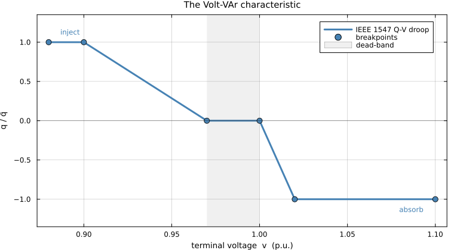
Figure 1. The IEEE 1547 Volt-VAr characteristic: a five-segment piecewise-linear law relating the inverter's own terminal voltage to its reactive output.
The curve used throughout this tutorial is the package default — breakpoints inside the range the standard [1] permits the utility to set, and the values used in [6]:
Table 1. The IEEE 1547 Volt-VAr curve used throughout: six breakpoint voltages and the reactive output at each, normalised by the inverter's reactive capability $\bar q$.
| $V^{\text{bp}}_1$ | $V^{\text{bp}}_2$ | $V^{\text{bp}}_3$ | $V^{\text{bp}}_4$ | $V^{\text{bp}}_5$ | $V^{\text{bp}}_6$ | |
|---|---|---|---|---|---|---|
| voltage (p.u.) | 0.88 | 0.90 | 0.97 | 1.00 | 1.02 | 1.10 |
| $q/\bar q$ | 1 | 1 | 0 | 0 | -1 | -1 |
Why an "if-else" cannot go straight into a solver
The law above is a definition by cases, and that is exactly what a solver cannot read. Two distinct obstacles follow.
Conditional logic. Which of the five expressions applies depends on $v_i$, which is itself a decision variable. Branching on the value of an unknown is not an algebraic constraint, and an algebraic constraint is the only thing a solver accepts.
Non-differentiability. Even setting the branching aside, the slope jumps at every breakpoint. Newton and interior-point methods build their steps from derivatives, and at a kink the derivative does not exist.
There are two ways out, and they define the rest of this tutorial:
- Introduce integer variables to encode the logic exactly. The model becomes an MILP. This is the Big-M and Lambda / special-ordered-set-of-type-2 (SOS2) route.
- Write the logic in closed algebraic form using step functions. The model stays integer-free but becomes non-smooth, so it needs an NLP solver. This is the Heaviside route.
Before the details, here is the whole comparison on one screen. Each method answers a different question, and that choice determines everything else about it:
Table 2. The three exact encodings of the droop at a glance.
| Big-M | Lambda / SOS2 | Heaviside | |
|---|---|---|---|
| the question it asks | which segment is active? | which two breakpoints am I between? | none — the algebra selects |
| the device | one binary per segment, plus a large constant $M$ | shared weights $\lambda_b$, plus SOS2 adjacency | products of unit steps |
| extra variables, per inverter per time step | 5 binary + 2 continuous | 5 binary + 6 continuous | none |
| model class | MILP | MILP | NLP, non-smooth |
| anything to tune? | yes — the value of $M$ | no | no |
| introduced in | [5] | [6], [7] | [10] |
The three columns are three answers to one question — how do you say "it depends" to a solver — and each pays for exactness in a different currency: a constant you must choose, a combinatorial structure, or differentiability.
The single-phase hosts
The droop is a self-contained module. Whatever distribution OPF you use, it exposes a voltage magnitude at each inverter bus; the droop module adds the relationship tying that inverter's reactive output to that voltage:
┌────────────────────────────┐
│ DOPF │
│ network model + limits │
└───────┬────────────▲───────┘
exposes│ vᵢ qᵢᴳ│ sets
┌───────▼────────────┴───────┐
│ Q-V droop module │
│ the IEEE 1547 curve │
└────────────────────────────┘Nothing in the three encodings below depends on the host. They work equally with LinDistFlow, a current-voltage alternating-current OPF (AC-OPF), an unbalanced three-phase AC-OPF, or a full nonlinear AC-OPF — they only require that the host expose $v_i$ at each inverter bus. That is a claim, so the Three phases section tests it: the same three encodings are run against four hosts in all, two single-phase and two three-phase.
This package implements two hosts, selected with the host keyword, and the droop block is identical in both:
Table 3. The two network models this package implements as hosts, selected with the host keyword.
host | model | class | solve |
|---|---|---|---|
:ivacopf (default) | IVACOPF — current-voltage AC-OPF [4], [11] | near-exact AC | successive linearisation, iterated |
:lindistflow | LinDistFlow — linearised branch flow [2], [3] | linear approximation | one pass |
solve_dopf(case, Gurobi.Optimizer; method = :lambda) # IVACOPF
solve_dopf(case, Gurobi.Optimizer; method = :lambda, host = :lindistflow) # LinDistFlowEvery result on this page is generated with IVACOPF, unless a comparison explicitly says otherwise. Both models are set out below — briefly, because the subject here is the droop, not the network model.
IVACOPF: the near-exact host
The current-voltage AC optimal power flow (IVACOPF) of Soltani, Khorsand and Ma [4], with the successive-linearisation scheme used here developed further in [11]. The network is written in rectangular current and voltage coordinates. Ohm's law and Kirchhoff's current law (KCL) are then exactly linear. Two things remain bilinear — the $v \cdot I$ power balance and the $|I|^2$ branch loss — and these are handled by successive linearisation: each is expanded about the previous iterate and the model is re-solved until the residual of the exact loss identity falls below a tolerance. Convergence is checked against the true nonlinear relation, not the linearised one, so the converged point satisfies the real power flow.
IVACOPF in equations
Written out in full, so that the droop constraints later have somewhere concrete to attach. Bus set $\mathcal{B}$, branch set $\mathcal{L}$, inverter buses $\mathcal{G} \subset \mathcal{B}$, slack bus $0$. Every quantity also carries a time index $t \in \{1,\dots,96\}$, suppressed throughout. A superscript $\circ$ marks a value fixed from the previous iterate — a constant, not a variable.
Voltage and current at bus $i$ are split into real and imaginary parts, $v_i^{\mathrm{re}}, v_i^{\mathrm{im}}$ and $I_i^{\mathrm{re}}, I_i^{\mathrm{im}}$; $I_{ij}$ is the current in branch $(i,j)$ and $v_i$ the voltage magnitude.
Slack reference.
\[v_0^{\mathrm{re}} = V^{\mathrm{nom}}, \qquad v_0^{\mathrm{im}} = 0 \tag{2}\]
Ohm's law along each branch — exact and linear, which is the point of current-voltage coordinates:
\[\begin{aligned} v_i^{\mathrm{re}} - v_j^{\mathrm{re}} &= R_{ij} I_{ij}^{\mathrm{re}} - X_{ij} I_{ij}^{\mathrm{im}}\\ v_i^{\mathrm{im}} - v_j^{\mathrm{im}} &= R_{ij} I_{ij}^{\mathrm{im}} + X_{ij} I_{ij}^{\mathrm{re}} \end{aligned} \qquad \forall (i,j) \in \mathcal{L} \tag{3}\]
Current balance (KCL) at each bus — also exact and linear:
\[I_i^{\mathrm{re}} = \sum_{j:(i,j)\in\mathcal{L}} I_{ij}^{\mathrm{re}} - \sum_{k:(k,i)\in\mathcal{L}} I_{ki}^{\mathrm{re}}, \qquad I_i^{\mathrm{im}} = \sum_{j:(i,j)\in\mathcal{L}} I_{ij}^{\mathrm{im}} - \sum_{k:(k,i)\in\mathcal{L}} I_{ki}^{\mathrm{im}} \tag{4}\]
Power balance. The true relation between injected power and current is bilinear:
\[p_i = v_i^{\mathrm{re}} I_i^{\mathrm{re}} + v_i^{\mathrm{im}} I_i^{\mathrm{im}}, \qquad q_i = v_i^{\mathrm{im}} I_i^{\mathrm{re}} - v_i^{\mathrm{re}} I_i^{\mathrm{im}} \tag{5}\]
Each product $xy$ is replaced by its first-order expansion about the previous iterate, $xy \approx x^{\circ}y + y^{\circ}x - x^{\circ}y^{\circ}$, giving the linear forms
\[\begin{aligned} \mathcal{P}_i &:= v_i^{\mathrm{re}\circ} I_i^{\mathrm{re}} + I_i^{\mathrm{re}\circ} v_i^{\mathrm{re}} + v_i^{\mathrm{im}\circ} I_i^{\mathrm{im}} + I_i^{\mathrm{im}\circ} v_i^{\mathrm{im}} - v_i^{\mathrm{re}\circ} I_i^{\mathrm{re}\circ} - v_i^{\mathrm{im}\circ} I_i^{\mathrm{im}\circ}\\ \mathcal{Q}_i &:= v_i^{\mathrm{im}\circ} I_i^{\mathrm{re}} + I_i^{\mathrm{re}\circ} v_i^{\mathrm{im}} - v_i^{\mathrm{re}\circ} I_i^{\mathrm{im}} - I_i^{\mathrm{im}\circ} v_i^{\mathrm{re}} - v_i^{\mathrm{im}\circ} I_i^{\mathrm{re}\circ} + v_i^{\mathrm{re}\circ} I_i^{\mathrm{im}\circ} \end{aligned} \tag{6}\]
which are then set equal to the net injection at each class of bus:
\[\begin{aligned} p_0^{\mathrm{grid}} &= \mathcal{P}_0, & q_0^{\mathrm{grid}} &= \mathcal{Q}_0 & &\text{slack}\\ -p_i^{L} &= \mathcal{P}_i, & -q_i^{L} &= \mathcal{Q}_i & &\forall i \in \mathcal{B}\setminus(\mathcal{G}\cup\{0\})\\ p_i^{G} - p_i^{L} &= \mathcal{P}_i, & q_i^{G} - q_i^{L} &= \mathcal{Q}_i & &\forall i \in \mathcal{G} \end{aligned} \tag{7}\]
The last line is where the droop enters the network: $q_i^{G}$ is exactly the variable the three encodings below constrain.
Branch losses, from $|I_{ij}|^2$ linearised the same way:
\[P^{\mathrm{loss}}_{ij} = R_{ij}\Big(2 I_{ij}^{\mathrm{re}\circ} I_{ij}^{\mathrm{re}} - (I_{ij}^{\mathrm{re}\circ})^2 + 2 I_{ij}^{\mathrm{im}\circ} I_{ij}^{\mathrm{im}} - (I_{ij}^{\mathrm{im}\circ})^2\Big) \tag{8}\]
and $Q^{\mathrm{loss}}_{ij}$ identically with $X_{ij}$ in place of $R_{ij}$.
Voltage magnitude, linearised about the previous iterate:
\[v_i = \frac{v_i^{\mathrm{re}\circ}}{\sqrt{(v_i^{\mathrm{re}\circ})^2 + (v_i^{\mathrm{im}\circ})^2}}\, v_i^{\mathrm{re}} + \frac{v_i^{\mathrm{im}\circ}}{\sqrt{(v_i^{\mathrm{re}\circ})^2 + (v_i^{\mathrm{im}\circ})^2}}\, v_i^{\mathrm{im}} \tag{9}\]
This $v_i$ is the single quantity the droop module reads.
Voltage limits.
\[V^{\min} \le v_i \le V^{\max}, \qquad \forall i \in \mathcal{B} \tag{10}\]
Convergence. After each solve, the residual of the exact — not linearised — loss identity is measured, and the loop repeats with a refreshed $\circ$ point until
\[\max_{(i,j),\,t}\;\Big|\,(v_i^{\mathrm{re}} - v_j^{\mathrm{re}})I_{ij}^{\mathrm{re}} + (v_i^{\mathrm{im}} - v_j^{\mathrm{im}})I_{ij}^{\mathrm{im}} - P^{\mathrm{loss}}_{ij}\Big| \;<\; \epsilon, \qquad \epsilon = 10^{-6} \tag{11}\]
Checking against the true nonlinear relation is what makes the converged point a genuine power-flow solution rather than a solution of the approximation.
In JuMP, with _pr marking a value carried over from the previous iterate:
# slack reference
@constraint(model, [i in SLACK_SET, h in HOUR_SET, m in QUARTER_SET], v_r[i,h,m] == c.Vnom)
@constraint(model, [i in SLACK_SET, h in HOUR_SET, m in QUARTER_SET], v_im[i,h,m] == 0)
# Ohm's law along each branch — exact and linear in these coordinates
@constraint(model, [(i,j) in BRANCH_SET, h in HOUR_SET, m in QUARTER_SET],
v_r[i,h,m] - v_r[j,h,m] == R[(i,j)]*Ibr_r[(i,j),h,m] - X[(i,j)]*Ibr_im[(i,j),h,m])
@constraint(model, [(i,j) in BRANCH_SET, h in HOUR_SET, m in QUARTER_SET],
v_im[i,h,m] - v_im[j,h,m] == R[(i,j)]*Ibr_im[(i,j),h,m] + X[(i,j)]*Ibr_r[(i,j),h,m])
# KCL at every bus — also exact and linear
@constraint(model, [bus in BUS_SET, h in HOUR_SET, m in QUARTER_SET],
Ibs_r[bus,h,m] == sum(Ibr_r[(bus,j),h,m] for (i,j) in BRANCH_SET if i == bus)
- sum(Ibr_r[(i,bus),h,m] for (i,j) in BRANCH_SET if j == bus))
@constraint(model, [bus in BUS_SET, h in HOUR_SET, m in QUARTER_SET],
Ibs_im[bus,h,m] == sum(Ibr_im[(bus,j),h,m] for (i,j) in BRANCH_SET if i == bus)
- sum(Ibr_im[(i,bus),h,m] for (i,j) in BRANCH_SET if j == bus))
# power balance: v·I expanded about the previous iterate
Plin(i,h,m) = v_r_pr[i,h,m]*Ibs_r[i,h,m] + Ibs_r_pr[i,h,m]*v_r[i,h,m] +
v_im_pr[i,h,m]*Ibs_im[i,h,m] + Ibs_im_pr[i,h,m]*v_im[i,h,m] -
v_r_pr[i,h,m]*Ibs_r_pr[i,h,m] - v_im_pr[i,h,m]*Ibs_im_pr[i,h,m]
Qlin(i,h,m) = v_im_pr[i,h,m]*Ibs_r[i,h,m] + Ibs_r_pr[i,h,m]*v_im[i,h,m] -
v_r_pr[i,h,m]*Ibs_im[i,h,m] - Ibs_im_pr[i,h,m]*v_r[i,h,m] -
v_im_pr[i,h,m]*Ibs_r_pr[i,h,m] + v_r_pr[i,h,m]*Ibs_im_pr[i,h,m]
@constraint(model, [i in SLACK_SET, h in HOUR_SET, m in QUARTER_SET], Pgen[i,h,m] == Plin(i,h,m))
@constraint(model, [i in SLACK_SET, h in HOUR_SET, m in QUARTER_SET], Qgen[i,h,m] == Qlin(i,h,m))
@constraint(model, [i in NON_DG_SET, h in HOUR_SET, m in QUARTER_SET], -c.Pload[i,h,m] == Plin(i,h,m))
@constraint(model, [i in NON_DG_SET, h in HOUR_SET, m in QUARTER_SET], -c.Qload[i,h,m] == Qlin(i,h,m))
@constraint(model, [i in DG_SET, h in HOUR_SET, m in QUARTER_SET],
-c.Pload[i,h,m] + Pdg[i,h,m] == Plin(i,h,m))
@constraint(model, [i in DG_SET, h in HOUR_SET, m in QUARTER_SET],
-c.Qload[i,h,m] + Qdg[i,h,m] == Qlin(i,h,m)) # ← where the droop meets the network
# branch losses, |I|² expanded about the previous iterate
Isq(i,j,h,m) = 2*Ibr_r_pr[((i,j),h,m)]*Ibr_r[(i,j),h,m] - Ibr_r_pr[((i,j),h,m)]^2 +
2*Ibr_im_pr[((i,j),h,m)]*Ibr_im[(i,j),h,m] - Ibr_im_pr[((i,j),h,m)]^2
@constraint(model, [(i,j) in BRANCH_SET, h in HOUR_SET, m in QUARTER_SET],
Ploss[(i,j),h,m] == R[(i,j)] * Isq(i,j,h,m))
@constraint(model, [(i,j) in BRANCH_SET, h in HOUR_SET, m in QUARTER_SET],
Qloss[(i,j),h,m] == X[(i,j)] * Isq(i,j,h,m))
# voltage magnitude, linearised about the previous iterate — this is the v the droop reads
@constraint(model, [i in BUS_SET, h in HOUR_SET, m in QUARTER_SET],
v[i,h,m] == (v_r_pr[i,h,m]/sqrt(v_r_pr[i,h,m]^2 + v_im_pr[i,h,m]^2))*v_r[i,h,m]
+ (v_im_pr[i,h,m]/sqrt(v_r_pr[i,h,m]^2 + v_im_pr[i,h,m]^2))*v_im[i,h,m])The convergence test, applied to the exact bilinear identity after each solve:
residual = maximum(abs(value((v_r[i,h,m] - v_r[j,h,m]) * Ibr_r[(i,j),h,m]
+ (v_im[i,h,m] - v_im[j,h,m]) * Ibr_im[(i,j),h,m]
- Ploss[(i,j),h,m]))
for (i,j) in BRANCH_SET, h in HOUR_SET, m in QUARTER_SET)LinDistFlow: the linear host
LinDistFlow [3], the linearised form of the branch-flow model [2], is what most of the droop-integrated DOPF literature uses. It is the branch-flow model with the loss terms dropped: for a radial feeder with small voltage deviations, keep the power balance and the voltage drop, discard $|I|^2$, and everything becomes linear.
\[\begin{aligned} p_j^{G} - p_j^{L} &= \sum_{k:(j,k)\in\mathcal{L}} P_{jk} \;-\; \sum_{i:(i,j)\in\mathcal{L}} P_{ij}\\ q_j^{G} - q_j^{L} &= \sum_{k:(j,k)\in\mathcal{L}} Q_{jk} \;-\; \sum_{i:(i,j)\in\mathcal{L}} Q_{ij}\\ v_j &= v_i + \Delta v_{ij}\\ \Delta v_{ij} &= -\,\frac{R_{ij}P_{ij} + X_{ij}Q_{ij}}{V^{\mathrm{nom}}} \end{aligned} \tag{12}\]
Four equations, all linear, with the slack fixed at $v_0 = V^{\mathrm{nom}}$. That is the entire network model:
@constraint(model, [i in SLACK_SET, h in HOUR_SET, m in QUARTER_SET], v[i,h,m] == c.Vnom)
outflow(P, b, h, m) = sum(P[(i,j),h,m] for (i,j) in BRANCH_SET if i == b; init = 0.0)
inflow(P, b, h, m) = sum(P[(i,j),h,m] for (i,j) in BRANCH_SET if j == b; init = 0.0)
# power balance — net injection = outflow − inflow, losses neglected
@constraint(model, [b in SLACK_SET, h in HOUR_SET, m in QUARTER_SET],
Pgen[b,h,m] - c.Pload[b,h,m] == outflow(Pbr, b, h, m) - inflow(Pbr, b, h, m))
@constraint(model, [b in SLACK_SET, h in HOUR_SET, m in QUARTER_SET],
Qgen[b,h,m] - c.Qload[b,h,m] == outflow(Qbr, b, h, m) - inflow(Qbr, b, h, m))
@constraint(model, [b in NON_DG_SET, h in HOUR_SET, m in QUARTER_SET],
-c.Pload[b,h,m] == outflow(Pbr, b, h, m) - inflow(Pbr, b, h, m))
@constraint(model, [b in NON_DG_SET, h in HOUR_SET, m in QUARTER_SET],
-c.Qload[b,h,m] == outflow(Qbr, b, h, m) - inflow(Qbr, b, h, m))
@constraint(model, [b in DG_SET, h in HOUR_SET, m in QUARTER_SET],
Pdg[b,h,m] - c.Pload[b,h,m] == outflow(Pbr, b, h, m) - inflow(Pbr, b, h, m))
@constraint(model, [b in DG_SET, h in HOUR_SET, m in QUARTER_SET],
Qdg[b,h,m] - c.Qload[b,h,m] == outflow(Qbr, b, h, m) - inflow(Qbr, b, h, m))
# voltage drop along each branch — v is a variable directly, no magnitude linearisation
@constraint(model, [(i,j) in BRANCH_SET, h in HOUR_SET, m in QUARTER_SET],
v[j,h,m] == v[i,h,m] -
(R[(i,j)] * Pbr[(i,j),h,m] + X[(i,j)] * Qbr[(i,j),h,m]) / c.Vnom)What changes for the droop: nothing. $v_i$ is a decision variable in both hosts, so the droop block from any of the three methods drops in unchanged — which is the practical meaning of the modularity claimed above, and the reason host is a keyword rather than a different package.
What changes for the solve:
Table 4. What changes between the two single-phase hosts.
| LinDistFlow | IVACOPF (used here) | |
|---|---|---|
| accuracy | approximate — losses dropped, radial feeder, small voltage deviations assumed | very accurate, near-exact AC |
| losses | not represented | modelled as $\lvert I\rvert^2 R$ |
| solve | run once | iterative — re-linearised and re-solved until the residual clears $\epsilon$ |
| effort | much faster, far lower computational cost | an MILP per pass, so several times the work |
The trade is accuracy against effort. LinDistFlow with Big-M or Lambda is a single MILP with no outer loop — which is why it is the usual choice in this literature [6], [7], and on the case study below it solves in well under a second against roughly half a minute for IVACOPF. What you give up is accuracy. Use IVACOPF for anything quantitative, which is also the choice made on accuracy grounds in [11].
Warm-starting IVACOPF from LinDistFlow
The two are not only alternatives — the cheap one makes the accurate one cheaper. By default IVACOPF begins from the flat profile prescribed by Soltani, Khorsand and Ma [4] ($v = 1\angle 0$, all currents zero), which is far from any solution. Passing warm_start = :lindistflow instead solves the linear host first and expands its dispatch into a consistent complex state with an exact power-flow sweep, so the first linearisation is taken about a point that is already close:
solve_dopf(case, Gurobi.Optimizer; method = :lambda, warm_start = :lindistflow)Table 5. Warm-starting IVACOPF from LinDistFlow: fewer passes, same answer.
| start | passes | total solve | curtailed |
|---|---|---|---|
flat (:bigm / :lambda) | 4 / 6 | 19.2 s / 16.1 s | 3022.0 kWh |
warm_start = :lindistflow | 3 / 3 | 11.2 s / 9.2 s | 3022.0 kWh |
Half the passes for Lambda and roughly a 1.7× speed-up, warm-start solve included. The curtailment is identical to the digit — which is the more interesting half of the result. Two very different starting points converging on the same answer is evidence that the answer belongs to the model rather than to the trajectory, and it is one of the checks cited below.
The single-phase case study
The IEEE 33-bus radial feeder of Baran and Wu [2], over a full day at 15-minute resolution — 96 time steps. Three photovoltaic (PV) systems with smart inverters sit at buses 7, 18 and 33. Loads follow separate industrial, commercial and residential shapes; PV follows a clear-sky irradiance profile.
Table 6. The three smart inverters of the single-phase case study on the IEEE 33-bus feeder [2]: array rating, inverter rating and the resulting reactive capability $\bar q$.
| bus | PV rating (kW) | inverter rating (kVA) | reactive capability $\bar q$ (kVAr) |
|---|---|---|---|
| 7 | 2200 | 2420 | 2420 |
| 18 | 1000 | 1100 | 1100 |
| 33 | 1500 | 1650 | 1650 |
Each inverter is rated 10 % above its PV array, so there is headroom for reactive support even at full irradiance. Bus voltages are limited to $[$ $$ $0.95, 1.05$ $]$ p.u., and the objective is to minimise total PV curtailment over the day.
avail = [collect(Float64, a) for a in case.avail_kW]
plot(hours, sum(avail), lw = 2, color = :darkorange, fillrange = 0, fillalpha = 0.18,
label = "total PV available", xlabel = "hour of day", ylabel = "kW",
title = "Available PV generation across the three inverters",
xticks = 0:3:24, xlims = (0, 24), legend = :topleft)
for (i, b) in enumerate(case.DG_SET)
plot!(hours, avail[i], lw = 1.4, ls = :dash, label = "bus $b")
end
plot!()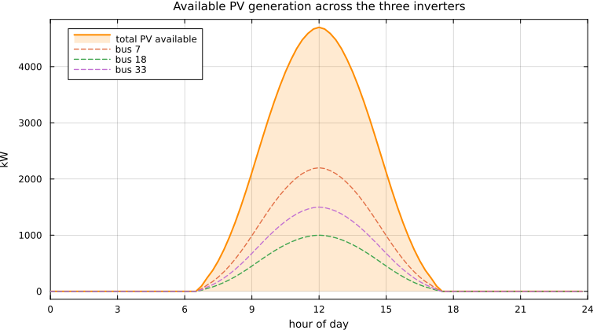
Figure 2. Available PV generation across the three inverters over the day, from a clear-sky irradiance profile at 15-minute resolution.
Why does a curtailment objective have anything to do with voltage at all? Because the droop ties the two together. Active power injection raises the local voltage; the droop reads that voltage and sets reactive power accordingly; and reactive flow moves voltages across the whole feeder. The optimiser wants every kilowatt it can get — the droop decides what taking it costs everywhere else.
The inverter's own constraints
Three more constraint groups sit on $(p_i^G, q_i^G)$ alongside the droop, and they matter because they are what the droop has to coexist with.
Apparent-power capability. The inverter cannot exceed its rating, $(p_i^{G})^2 + (q_i^{G})^2 \le (s_i^{G})^2$. That circle is convex but nonlinear, so following [6] it is replaced by an inscribed $2k$-sided polygon — exactly $2k$ linear constraints, tightening as $k$ grows:
\[-s_i^{G} \;\le\; \cos(\ell\phi)\, p_i^{G} + \sin(\ell\phi)\, q_i^{G} \;\le\; s_i^{G}, \qquad \phi = \frac{\pi}{k}, \quad \ell = 1,\dots,k, \quad \forall i \in \mathcal{G} \tag{13}\]
with $k = 16$ here, giving a 32-vertex polygon. Because the inverter is oversized relative to the array ($s_i^G = 1.1\,\bar p_i$), there is reactive headroom even at full irradiance.
Active and reactive bounds. Active output is capped by the array rating and, at each time step, by the available irradiance $G(t)$; reactive output by the inverter rating:
\[0 \;\le\; p_i^{G} \;\le\; p_i^{G,\max}(t) = \bar p_i\, G(t) \;\le\; \bar p_i, \qquad q_i^{G} \;\le\; \bar q_i \tag{14}\]
Curtailment and the objective. Curtailment is the shortfall against what was available, and the objective is its total over all inverters and all time steps:
\[\mathrm{PVC}_i(t) = p_i^{G,\max}(t) - p_i^{G}(t) \;\ge\; 0, \qquad \min \;\sum_{i \in \mathcal{G}} \sum_{t} \mathrm{PVC}_i(t) \tag{15}\]
This is objective $OF_1$ of [6]. Note what is not a decision here: $q_i^G$ never appears in the objective. It is pinned entirely by the droop, which is precisely the point — the optimiser cannot buy voltage support by choosing reactive power freely, it can only choose active power and live with the reactive response the curve produces.
All three groups in JuMP — identical under either host, because none of them touches the network:
# apparent-power capability: a 2k-sided polygon inscribing the S-circle
k = 16
for l in 1:k
θ = l * π / k
@constraint(model, [d in DG_SET, h in HOUR_SET, m in QUARTER_SET],
cos(θ) * Pdg[d,h,m] + sin(θ) * Qdg[d,h,m] <= c.Sdg_max[d])
@constraint(model, [d in DG_SET, h in HOUR_SET, m in QUARTER_SET],
cos(θ) * Pdg[d,h,m] + sin(θ) * Qdg[d,h,m] >= -c.Sdg_max[d])
end
# active and reactive bounds
@constraint(model, [d in DG_SET, h in HOUR_SET, m in QUARTER_SET],
Pdg[d,h,m] <= c.Pdg_max_vary[d][h,m]) # irradiance ceiling at this step
@constraint(model, [d in DG_SET, h in HOUR_SET, m in QUARTER_SET],
Pdg[d,h,m] <= c.Pdg_max[d]) # array rating
@constraint(model, [d in DG_SET, h in HOUR_SET, m in QUARTER_SET],
Qdg[d,h,m] <= c.Sdg_max[d])
# curtailment and the objective
@constraint(model, [d in DG_SET, h in HOUR_SET, m in QUARTER_SET],
PVC[d,h,m] == c.Pdg_max_vary[d][h,m] - Pdg[d,h,m])
@objective(model, Min, sum(PVC[d,h,m] for d in DG_SET, h in HOUR_SET, m in QUARTER_SET))The exact AC reference
Wherever this page compares a dispatch against "the exact AC solution", the reference is a backward/forward sweep power flow [13] — no linearisation, iterated to a fixed point for the given injections. It appears twice in the package:
Table 7. The exact AC reference used to audit a solved dispatch.
| function | what it does |
|---|---|
base_case_voltages | the no-inverter reference case |
SmartInverterDOPF._sweep_state | expands a dispatch into a full complex state — used both to warm-start IVACOPF and to audit a solved dispatch |
To run the audit yourself on any solved result:
using SmartInverterDOPF, Gurobi
case = load_case()
res = solve_dopf(case, Gurobi.Optimizer; method = :lambda, host = :lindistflow)
v_r, v_im, _, _, _, _ = SmartInverterDOPF._sweep_state(case, res.Pdg, res.Qdg)
Vtrue = sqrt.(v_r .^ 2 .+ v_im .^ 2) # the exact AC voltages
curve = ieee1547_curve()
maximum(abs.(res.V .- Vtrue)) # how far the host's v is from the truth
maximum(abs(res.Qdg[i,h,m] - droop_q(curve, Vtrue[case.DG_SET[i],h,m],
case.Sdg_max[case.DG_SET[i]]))
for i in eachindex(case.DG_SET), h in 1:24, m in 1:4) # droop residual at the true v
count(<(case.Vmin), Vtrue) + count(>(case.Vmax), Vtrue) # real limit violationsRunning the single-phase examples
method and host are independent, so there are six single-phase combinations. Each has a standalone script in examples/single_phase/:
Table 8. The six single-phase example scripts, one per host and encoding.
| Big-M | Lambda / SOS2 | Heaviside | |
|---|---|---|---|
| IVACOPF | ivacopf_bigm.jl | ivacopf_lambda.jl | ivacopf_heaviside.jl |
| LinDistFlow | lindistflow_bigm.jl | lindistflow_lambda.jl | lindistflow_heaviside.jl |
julia --project=examples/single_phase examples/single_phase/ivacopf_lambda.jlMethod A — Big-M
Following Savasci, Inaolaji and Paudyal [5], where this formulation was introduced for a second-order-cone DOPF; also Chapter 4 of Inaolaji's dissertation [9].
The idea in one sentence. Give every segment its own on/off switch, and write constraints that are switched off — made trivially true — whenever their segment is not the active one.
That switching-off is what "big-M" means. Take any constraint you want to enforce only when a binary $\delta$ equals 1, and add $M(1-\delta)$ to its right-hand side. If $\delta = 1$ the added term vanishes and the constraint bites. If $\delta = 0$ the right-hand side becomes so large that the constraint cannot possibly be violated — it is still present in the model, but it no longer restricts anything. One constant, $M$, buys you an if-statement.
Step 1: exactly one segment is active. Introduce a binary $\delta_b$ for each of the five segments and require
\[\sum_{b=1}^{5}\delta_{b}=1 . \tag{16}\]
Step 2: each switch owns a voltage window. If segment $b$ is the active one, then $v_i$ must lie in that segment's voltage range $[V^{\text{bp}}_{b}, V^{\text{bp}}_{b+1}]$. In big-M form that is one two-sided inequality per segment, and writing all five out gives the complete window system:
\[\begin{aligned} -(1-\delta_{1})M + V_i^{l}\;\; &\le v_i \le\;\; V^{\text{bp}}_{2} + (1-\delta_{1})M\\ -(1-\delta_{2})M + V^{\text{bp}}_{2} &\le v_i \le\;\; V^{\text{bp}}_{3} + (1-\delta_{2})M\\ -(1-\delta_{3})M + V^{\text{bp}}_{3} &\le v_i \le\;\; V^{\text{bp}}_{4} + (1-\delta_{3})M\\ -(1-\delta_{4})M + V^{\text{bp}}_{4} &\le v_i \le\;\; V^{\text{bp}}_{5} + (1-\delta_{4})M\\ -(1-\delta_{5})M + V^{\text{bp}}_{5} &\le v_i \le\;\; V_i^{u} + (1-\delta_{5})M \end{aligned} \tag{17}\]
Each row is vacuous when its $\delta_b = 0$ and binding when $\delta_b = 1$, so together with Step 1 the solver is forced to pick the segment that genuinely contains $v_i$. Note the two outer rows: the first segment is bounded below by the variable's own lower bound $V_i^{l}$ and the last above by $V_i^{u}$, rather than by $V^{\text{bp}}_{1}$ and $V^{\text{bp}}_{6}$. That keeps the model feasible if $v_i$ ever sits outside the range the curve was drawn over — the saturated laws simply continue to apply.
Step 3: assemble the droop law — and watch it turn nonlinear. With the switches in place, $q_i^G$ is just the sum of the five segment laws, each weighted by its own binary. Segments 1, 3 and 5 contribute constants ($\bar q_i$, $0$, $-\bar q_i$); the two sloped segments contribute their affine laws, written in slope–intercept form:
\[q_i^G \;=\; \delta_1\,\bar q_i \;+\; \delta_2\!\left(\alpha_1 v_i + \frac{\bar q_i V^{\text{bp}}_3}{V^{\text{bp}}_3 - V^{\text{bp}}_2}\right) \;+\; \delta_3\cdot 0 \;+\; \delta_4\!\left(\alpha_2 v_i + \frac{\bar q_i V^{\text{bp}}_4}{V^{\text{bp}}_5 - V^{\text{bp}}_4}\right) \;+\; \delta_5\left(-\bar q_i\right) \tag{18}\]
with slopes $\alpha_1 = -\bar q_i/(V^{\text{bp}}_3-V^{\text{bp}}_2)$ and $\alpha_2 = -\bar q_i/(V^{\text{bp}}_5-V^{\text{bp}}_4)$.
This is a correct statement of the curve: exactly one $\delta_b$ equals 1, so exactly one bracket survives and $q_i^G$ takes that segment's value. But it is not linear. Multiply the two sloped brackets out and the offending terms appear:
\[\underbrace{\delta_2\,\alpha_1 v_i}_{\text{bilinear}} \qquad\text{and}\qquad \underbrace{\delta_4\,\alpha_2 v_i}_{\text{bilinear}}\]
Each is a product of two decision variables — one binary, one continuous. Everything else in the expression is a variable times a constant. So the whole difficulty of the Big-M formulation reduces to these two products, and if they can be removed the model becomes a plain MILP.
Step 4: remove the two products, exactly. The saving grace is that $\delta_b$ is binary rather than merely continuous, and $v_i$ is bounded. Under those two conditions each product can be replaced by a new continuous variable $W_b := \delta_b v_i$ and four linear inequalities, with no approximation whatsoever:
\[-M(1-\delta_b) \;\le\; v_i - W_b \;\le\; M(1-\delta_b), \qquad V^{\text{bp}}_{b}\,\delta_b \;\le\; W_b \;\le\; V^{\text{bp}}_{b+1}\,\delta_b . \tag{19}\]
Check the two cases and the exactness is immediate. If $\delta_b = 1$, the left pair forces $W_b = v_i$ and the right pair confines $v_i$ to the segment. If $\delta_b = 0$, the right pair forces $W_b = 0$ (both bounds collapse to zero) while the left pair goes slack. Either way $W_b$ equals $\delta_b v_i$ exactly — this is a reformulation, not a relaxation.
Only segments 2 and 4 need this treatment, and for those the $W_b$ bounds already pin $v_i$ into the segment, so their Step-2 window rows are replaced rather than added to. The complete constraint system for the Big-M droop is therefore:
\[\begin{aligned} -(1-\delta_{1})M + V_i^{l}\;\; &\le v_i \le\; V^{\text{bp}}_{2} + (1-\delta_{1})M\\[2pt] -M(1-\delta_{2}) \;&\le\; v_i - W_{2} \;\le\; (1-\delta_{2})M\\ V^{\text{bp}}_{2}\,\delta_{2} \;&\le\; W_{2} \;\le\; V^{\text{bp}}_{3}\,\delta_{2}\\[2pt] -(1-\delta_{3})M + V^{\text{bp}}_{3} &\le v_i \le\; V^{\text{bp}}_{4} + (1-\delta_{3})M\\[2pt] -M(1-\delta_{4}) \;&\le\; v_i - W_{4} \;\le\; (1-\delta_{4})M\\ V^{\text{bp}}_{4}\,\delta_{4} \;&\le\; W_{4} \;\le\; V^{\text{bp}}_{5}\,\delta_{4}\\[2pt] -(1-\delta_{5})M + V^{\text{bp}}_{5} &\le v_i \le\; V_i^{u} + (1-\delta_{5})M \end{aligned} \tag{20}\]
Read alongside the Step-2 system, the change is visible: rows 2 and 4 — the sloped segments — have each become a $W$ definition plus a $W$ range, while the three flat segments keep their original windows unchanged.
Now substitute $\delta_2 v_i \to W_2$ and $\delta_4 v_i \to W_4$ in the Step 3 expression. Nothing else changes, and the droop law becomes a single linear equation in which every coefficient is a constant:
\[q_i^G = \delta_1\bar q_i + \alpha_1 W_2 + \delta_2\frac{\bar q_i V^{\text{bp}}_3}{V^{\text{bp}}_3 - V^{\text{bp}}_2} + \alpha_2 W_4 + \delta_4\frac{\bar q_i V^{\text{bp}}_4}{V^{\text{bp}}_5 - V^{\text{bp}}_4} - \delta_5\bar q_i \tag{21}\]
Compare it with the Step 3 version: the two bracketed sloped terms have simply been split into a $W$ term and a $\delta$ term. That substitution is the entire content of the Big-M droop model.
In JuMP:
@variable(model, δ[1:5, DG_SET, HOUR_SET, QUARTER_SET], Bin)
@variable(model, W2[DG_SET, HOUR_SET, QUARTER_SET])
@variable(model, W4[DG_SET, HOUR_SET, QUARTER_SET])
@constraint(model, [d in DG_SET, h in HOUR_SET, m in QUARTER_SET],
sum(δ[i, d, h, m] for i in 1:5) == 1)
# flat segments 1, 3, 5 — the binary only switches on a voltage window
for (i, lo, hi) in ((1, 1, 2), (3, 3, 4), (5, 5, 6))
@constraint(model, [d in DG_SET, h in HOUR_SET, m in QUARTER_SET],
v[d, h, m] >= Vbp[lo] - Mbig * (1 - δ[i, d, h, m]))
@constraint(model, [d in DG_SET, h in HOUR_SET, m in QUARTER_SET],
v[d, h, m] <= Vbp[hi] + Mbig * (1 - δ[i, d, h, m]))
end
# sloped segments 2 and 4 — W = δ·v, whose bounds double as the window
for (i, W, lo, hi) in ((2, W2, 2, 3), (4, W4, 4, 5))
@constraint(model, [d in DG_SET, h in HOUR_SET, m in QUARTER_SET],
v[d, h, m] - W[d, h, m] >= -Mbig * (1 - δ[i, d, h, m]))
@constraint(model, [d in DG_SET, h in HOUR_SET, m in QUARTER_SET],
v[d, h, m] - W[d, h, m] <= Mbig * (1 - δ[i, d, h, m]))
@constraint(model, [d in DG_SET, h in HOUR_SET, m in QUARTER_SET],
W[d, h, m] >= Vbp[lo] * δ[i, d, h, m])
@constraint(model, [d in DG_SET, h in HOUR_SET, m in QUARTER_SET],
W[d, h, m] <= Vbp[hi] * δ[i, d, h, m])
end$M$ only has to dominate the largest possible violation of a deactivated constraint, which here is set by the voltage bounds. A needlessly large $M$ leaves the LP relaxation loose, the branch-and-bound tree deep, and the solve slow. The value used here is 1.1.
The cost of exactness is bookkeeping: five binaries per inverter per time step, plus two auxiliary continuous variables.
Method B — Lambda / SOS2
Following Inaolaji, Savasci and Paudyal [6] and its three-phase extension [7], which apply the classical lambda method to Volt-VAr and Volt-Watt droops on a LinDistFlow host; see also Chapter 5 of [9].
The idea in one sentence. Instead of asking which segment am I on, describe the operating point directly as a blend of two neighbouring breakpoints.
Big-M starts from the case distinction and works to make it linear. Lambda never forms the case distinction at all. It uses a fact about piecewise-linear curves: every point on the curve is a weighted average of two adjacent breakpoints, and nothing else is.
So attach a weight $\lambda_b \ge 0$ to each of the six breakpoints, make the weights sum to one, and build both coordinates from the same weights:
\[v_i = \sum_{b=1}^{6}\lambda_b V^{\text{bp}}_b, \qquad q_i^G = \sum_{b=1}^{6}\lambda_b q^{\text{bp}}_b, \qquad \sum_{b=1}^{6}\lambda_b = 1, \qquad \lambda_b \ge 0 . \tag{22}\]
The single shared $\lambda$ is the whole trick. Because one set of weights generates the voltage and the reactive power, the pair $(v_i, q_i^G)$ cannot drift off the curve — move the weights and both coordinates slide together along it. Both $V^{\text{bp}}_b$ and $q^{\text{bp}}_b$ are constants, so these are ordinary linear constraints, and no $M$ needs choosing anywhere.
The catch. As written, the weights describe the convex hull of the six breakpoints, not the curve. Nothing yet stops the solver putting weight on $\lambda_1$ and $\lambda_5$ simultaneously, which lands the operating point somewhere in the interior of that hull — a $(v, q)$ pair the inverter would never produce. Since interior points give the optimiser more reactive power at a given voltage than the real device offers, it will happily take them.
The fix is the classical SOS2 condition: at most two weights may be nonzero, and they must be adjacent. That is exactly the "blend of two neighbouring breakpoints" statement, imposed rather than hoped for. Introduce one binary $z_b$ per segment — five of them for six breakpoints — and write, in full:
\[\begin{aligned} \lambda_1 &\le z_1\\ \lambda_2 &\le z_1 + z_2\\ \lambda_3 &\le z_2 + z_3\\ \lambda_4 &\le z_3 + z_4\\ \lambda_5 &\le z_4 + z_5\\ \lambda_6 &\le z_5\\[2pt] \sum_{b=1}^{5} z_b &= 1, \qquad z_b \in \{0,1\} \end{aligned} \tag{23}\]
Read it as: $z_b = 1$ names the active segment; a weight $\lambda_b$ is allowed to be nonzero only if breakpoint $b$ is an endpoint of that segment. Since exactly one $z_b$ is 1, precisely two adjacent weights survive and every other weight is forced to zero. The blend is back on the curve.
Trace one case to see it work. Suppose $z_3 = 1$ and every other $z_b = 0$. Rows 1, 2 and 6 then force $\lambda_1 = \lambda_2 = \lambda_6 = 0$; row 5 forces $\lambda_5 = 0$; and only $\lambda_3 \le 1$ and $\lambda_4 \le 1$ survive. With $\sum_b \lambda_b = 1$ the operating point is a blend of breakpoints 3 and 4 alone — that is, a point on segment 3, the dead-band.
Collecting everything, the complete Lambda droop model is:
\[\begin{aligned} v_i &= \sum_{b=1}^{6}\lambda_b V^{\text{bp}}_b\\ q_i^G &= \sum_{b=1}^{6}\lambda_b q^{\text{bp}}_b\\ \sum_{b=1}^{6}\lambda_b &= 1, \qquad \lambda_b \ge 0\\ \lambda_1 \le z_1, \quad \lambda_b &\le z_{b-1} + z_b \;\;(b=2,\dots,5), \quad \lambda_6 \le z_5\\ \sum_{b=1}^{5} z_b &= 1, \qquad z_b \in \{0,1\} \end{aligned} \tag{24}\]
Seven constraint rows and no constant to tune — compare that with the Big-M system above.
Worth noticing what is absent: no big-M constant, and no product of a binary with a continuous variable. The binaries here only switch other variables off — a much better-behaved use of integrality, and the reason this formulation tends to give tighter relaxations than Big-M on the same curve.
@variable(model, λ[1:6, DG_SET, HOUR_SET, QUARTER_SET] >= 0)
@variable(model, z[1:5, DG_SET, HOUR_SET, QUARTER_SET], Bin)
@constraint(model, [d in DG_SET, h in HOUR_SET, m in QUARTER_SET],
sum(λ[i, d, h, m] for i in 1:6) == 1)
@constraint(model, [d in DG_SET, h in HOUR_SET, m in QUARTER_SET],
sum(z[i, d, h, m] for i in 1:5) == 1)
@constraint(model, [d in DG_SET, h in HOUR_SET, m in QUARTER_SET],
λ[1, d, h, m] <= z[1, d, h, m])
@constraint(model, [i in 2:5, d in DG_SET, h in HOUR_SET, m in QUARTER_SET],
λ[i, d, h, m] <= z[i-1, d, h, m] + z[i, d, h, m])
@constraint(model, [d in DG_SET, h in HOUR_SET, m in QUARTER_SET],
λ[6, d, h, m] <= z[5, d, h, m])
@constraint(model, [d in DG_SET, h in HOUR_SET, m in QUARTER_SET],
v[d, h, m] == sum(λ[i, d, h, m] * Vbp[i] for i in 1:6))
@constraint(model, [d in DG_SET, h in HOUR_SET, m in QUARTER_SET],
Qdg[d, h, m] == sum(λ[i, d, h, m] * qpts[d][i] for i in 1:6))Most MILP solvers support SOS2 natively via MOI.SOS2, which lets the solver branch on the set directly instead of on explicit binaries. The formulation above is written out longhand because it is portable and because it makes the logic visible — which is the point of a tutorial.
The Lambda form has a decisive practical advantage over Big-M once you stop treating the curve as fixed. The breakpoint voltages $V^{\text{bp}}_b$ appear linearly here, and in only one place. Make them decision variables — so the OPF chooses the curve as well as the dispatch — and exactly one product turns bilinear:
\[v_i = \sum_{b=1}^{6}\lambda_b V^{\text{bp}}_b \tag{25}\]
A single, well-understood bilinear term, routinely handled by a McCormick envelope and tightened by partitioning the breakpoint range if the relaxation is too loose. The reactive equation $q_i^G = \sum_b \lambda_b q^{\text{bp}}_b$ is untouched, since the ordinates stay constant.
Big-M remains exact under the same change — nothing about it stops representing the curve — but the nonlinearity it acquires is both more widespread and of a worse kind. The slopes $\alpha_1 = -\bar q_i/(V^{\text{bp}}_3 - V^{\text{bp}}_2)$ and $\alpha_2$ become rational functions of the breakpoints, so in the droop law the terms $\alpha_1 W_2 + \delta_2\,\bar q_i V^{\text{bp}}_3/(V^{\text{bp}}_3 - V^{\text{bp}}_2)$ and their segment-4 counterparts are nonlinear in $V^{\text{bp}}$ rather than merely bilinear; and the segment bounds $V^{\text{bp}}_b \delta_b \le W_b \le V^{\text{bp}}_{b+1}\delta_b$ pick up further products of breakpoints with binaries. Lambda confines the whole difficulty to one term; Big-M spreads it across the droop law and the bounds. That is why work on optimised and adaptive droop curves is normally built on Lambda [8], [11].
Method C — Heaviside
Following Inaolaji, Savasci and Paudyal [10], which introduced this encoding precisely to remove the integer variables from the two formulations above, on the same current–voltage DOPF host used here; see also Chapter 6 of [9].
The idea in one sentence. Keep the case distinction, but write it as arithmetic instead of logic — so there is nothing for a solver to branch on.
Both previous methods spend integer variables to answer "which segment?". Integers are what make a model combinatorial: the count grows with inverters × time steps, and branch-and-bound has to search over them. The motivation in [10] is to get rid of them altogether, which also makes the model a candidate for real-time use.
The observation is that an "if" is just an on/off switch, and the unit step is an on/off switch written as a function:
\[H(x) = \begin{cases} 1, & x \ge 0\\ 0, & x < 0\end{cases} \tag{26}\]
Shift it to flip at a breakpoint and subtract two of them, and you get a window that equals 1 on one segment and 0 everywhere else:
\[\mathcal{W}_b(v_i) \;=\; H\!\left(v_i - V^{\text{bp}}_{b}\right) - H\!\left(v_i - V^{\text{bp}}_{b+1}\right) \tag{27}\]
which is precisely the condition $V^{\text{bp}}_b \le v_i \le V^{\text{bp}}_{b+1}$ — the if-else of segment $b$, written without logic and without binaries. Multiply each segment's law by its own window and add them up. The windows are disjoint, so at any voltage all but one vanish and the sum collapses to the single active law.
Written out with every window expanded, and with all five segments present so the structure is visible:
\[\begin{aligned} q_i^G \;=\; &\;\;\;\;\bar q_i \big[\,H(v_i - V^{\text{bp}}_1) - H(v_i - V^{\text{bp}}_2)\,\big] \;+\\ &\;\alpha_1\!\left(v_i - V^{\text{bp}}_3\right)\big[\,H(v_i - V^{\text{bp}}_2) - H(v_i - V^{\text{bp}}_3)\,\big] \;+\\ &\;\;\;\;0\,\big[\,H(v_i - V^{\text{bp}}_3) - H(v_i - V^{\text{bp}}_4)\,\big] \;+\\ &\;\alpha_2\!\left(v_i - V^{\text{bp}}_4\right)\big[\,H(v_i - V^{\text{bp}}_4) - H(v_i - V^{\text{bp}}_5)\,\big] \;-\\ &\;\;\;\;\bar q_i \big[\,H(v_i - V^{\text{bp}}_5) - H(v_i - V^{\text{bp}}_6)\,\big] \end{aligned} \tag{28}\]
with the same slopes as before, $\alpha_1 = -\bar q_i/(V^{\text{bp}}_3-V^{\text{bp}}_2)$ and $\alpha_2 = -\bar q_i/(V^{\text{bp}}_5-V^{\text{bp}}_4)$.
That is the entire droop model — one equation, no auxiliary variables, no constraint system to accompany it. Line 3 is written out only for symmetry; being identically zero, it is dropped in the implementation.
This is the one place where it is easy to get the algebra wrong, so it is worth stating explicitly. A sloped term is written $\alpha(v_i - V^{\ast})$ where $V^{\ast}$ is the voltage at which that segment's reactive output passes through zero — $V^{\text{bp}}_3$ for segment 2, and $V^{\text{bp}}_4$ for segment 4.
Anchoring anywhere else breaks the curve. Anchor segment 2 at $V^{\text{bp}}_2$ instead, for example, and the term evaluates to $0$ at $V^{\text{bp}}_2$ where the curve should read $\bar q_i$, leaving a jump at the breakpoint. With the anchors above, segment 2 gives $\bar q_i$ at $V^{\text{bp}}_2$ and $0$ at $V^{\text{bp}}_3$, matching the flat segments it joins on either side. The verification section below is what confirms this came out right.
Hstep(x) = op_ifelse(op_greater_than_or_equal_to(x, 0), 1.0, 0.0)
α1 = Dict(d => -qbar[d] / (Vbp[3] - Vbp[2]) for d in DG_SET)
α2 = Dict(d => -qbar[d] / (Vbp[5] - Vbp[4]) for d in DG_SET)
@constraint(model, [d in DG_SET, h in HOUR_SET, m in QUARTER_SET],
Qdg[d, h, m] ==
qbar[d] * (Hstep(v[d,h,m] - Vbp[1]) - Hstep(v[d,h,m] - Vbp[2]))
+ α1[d] * (v[d,h,m] - Vbp[3]) * (Hstep(v[d,h,m] - Vbp[2]) - Hstep(v[d,h,m] - Vbp[3]))
+ α2[d] * (v[d,h,m] - Vbp[4]) * (Hstep(v[d,h,m] - Vbp[4]) - Hstep(v[d,h,m] - Vbp[5]))
- qbar[d] * (Hstep(v[d,h,m] - Vbp[5]) - Hstep(v[d,h,m] - Vbp[6])))op_ifelse and op_greater_than_or_equal_to are JuMP's nonlinear operators (JuMP ≥ 1.15); they build the expression correctly outside a macro.
No extra variables at all — one algebraic expression per inverter per time step. The price is paid in solver behaviour, and it is not merely theoretical. $H(\cdot)$ is discontinuous, so the derivative is undefined at every breakpoint and the problem is non-convex. On this case study Ipopt does reach the same answer as the MILP encodings, but the first pass — started from a flat voltage profile, far from the solution — stops at ALMOST_LOCALLY_SOLVED, short of its own convergence tolerance:
Table 9. Successive-linearisation passes for the Heaviside encoding on the IVACOPF host, single-phase case study.
| iteration | solve (s) | objective | linearisation residual | solver status |
|---|---|---|---|---|
| 1 | 16.23 | 1.475286 | 2.82e-03 | ALMOST_LOCALLY_SOLVED |
| 2 | 13.76 | 1.233299 | 2.52e-04 | LOCALLY_SOLVED |
| 3 | 13.08 | 1.208829 | 2.23e-07 | LOCALLY_SOLVED |
Once the linearisation point is close enough that most inverters sit comfortably inside a single segment, the later passes converge cleanly. But that first pass is the non-smoothness showing up in practice: an interior-point method cannot get reliable derivative information at the kinks, and a harder case — more inverters, voltages sitting nearer the breakpoints — is where this bites. In production this encoding is normally smoothed, the step replaced by a sigmoid $H(x) \approx (1 + e^{-kx})^{-1}$, which restores differentiability at the cost of no longer representing the curve exactly.
Verification: does the dispatch actually lie on the curve?
This is the check that matters. Each method is exact only if every one of the $3 \times 96 = 288$ optimised operating points lands on the droop.
The droop-deviation metric
Every table on this page that reports a max droop deviation reports the same quantity. Let $q_i(\cdot)$ be the IEEE 1547 curve of (1), scaled by inverter $i$'s reactive capability $\bar q_i$; let $q_i^{G}(t)$ be the reactive power the solver actually dispatched; and let $v_i(t)$ be the terminal voltage that inverter senses. The deviation is the largest gap between the two, over every inverter and every time step:
\[\Delta \;=\; \max_{i \in \mathcal{G},\; t} \Big\lvert\, q_i^{G}(t) \;-\; q_i\big(v_i(t)\big) \,\Big\rvert \tag{29}\]
It is zero exactly when every dispatch point lies on the curve, so it is the number that decides whether an encoding is exact. Which voltage is substituted for $v_i(t)$ changes what (29) measures, and the two readings are reported separately throughout:
| $v_i(t)$ taken from | what $\Delta$ then measures |
|---|---|
| the host's own solution | exactness of the encoding — does the dispatch satisfy the curve inside the model? |
| an exact AC power flow on the same dispatch | accuracy of the host — would the real inverter have produced that VAr output? |
In code, droop_q is (1) written out and the maximum is taken directly:
droop_q(v, qb) = v <= VBP[2] ? qb : # flat, +q̄
v <= VBP[3] ? qb * (VBP[3] - v) / (VBP[3] - VBP[2]) : # sloped
v <= VBP[4] ? 0.0 : # dead-band
v <= VBP[5] ? -qb * (v - VBP[4]) / (VBP[5] - VBP[4]) : # sloped
-qb # flat, −q̄
dev = maximum(abs(Qdg_v[i, t] - droop_q(V[PV[i].bus, PV[i].phase, t], PV[i].Smax))
for i in 1:npv, t in 1:T)Reported values sit between $10^{-17}$ and $10^{-6}$ p.u. — solver tolerance, not model error. A value of $10^{-3}$ or larger would mean the encoding had failed.
The curves below are drawn in absolute p.u. VArs rather than normalised by $\bar q_i$. Normalising would collapse all three inverters onto one line and hide the thing worth seeing: each inverter has its own reactive capability, so each follows its own curve, and a dispatch point is only correct if it lies on the curve of its own inverter. The shaded band is the admissible voltage range $[0.95, 1.05]$.
si_color = [:seagreen, :orangered, :dodgerblue] # in DG_SET order: 7, 18, 33
dgs = collect(Int, case.DG_SET)
Sb = case.Sbase_kVA # kVA per p.u.
qbar_pu = collect(Float64, case.qbar_kVAr) ./ Sb # reactive capability, p.u.
qmax = maximum(qbar_pu)
function droop_figure(m)
r = runs[m]
p = plot(size = (880, 620), grid = false, framestyle = :axes,
title = "Dispatch vs. the IEEE-1547 droop — $(NAMES[m])", titlefontsize = 13,
xlabel = "Voltage (p.u.)", ylabel = "VAR Gen. (p.u.)",
xlims = (Vbp[1], Vbp[end]), ylims = (-1.15qmax, 1.15qmax),
xticks = 0.90:0.05:1.10,
guidefontsize = 12, tickfontsize = 10, legendfontsize = 9,
legend = :outertop, legend_columns = 3,
foreground_color_legend = :black, background_color_legend = :white,
left_margin = 4Plots.mm, right_margin = 8Plots.mm,
top_margin = 2Plots.mm, bottom_margin = 4Plots.mm)
# admissible voltage band and the zero-VAr line
vspan!(p, [case.Vmin_limit, case.Vmax_limit], color = :lightblue, alpha = 0.30,
lw = 0, label = false)
vline!(p, [case.Vmin_limit, case.Vmax_limit], ls = :dash, lw = 1.5,
color = :gray65, label = false)
hline!(p, [0.0], ls = :dash, lw = 1.5, color = :gray65, label = false)
for i in eachindex(dgs)
qcurve = qshape .* qbar_pu[i] # this SI's droop
plot!(p, Vbp, qcurve, lw = 3, color = si_color[i], label = false)
scatter!(p, Vbp[2:5], qcurve[2:5], m = :circle, ms = 6, # breakpoints
mc = si_color[i], msc = si_color[i], label = false)
scatter!(p, collect(Float64, r.Vdg_series[i]), # 96 dispatch points
collect(Float64, r.Qdg_series[i]) ./ Sb,
m = :+, ms = 7, msw = 2.5, mc = si_color[i], msc = si_color[i],
label = false)
end
# legend proxies, parked outside xlims so they appear only in the key
for i in length(dgs):-1:1
plot!(p, [1.5, 1.6], [0.0, 0.0], lw = 1.5, color = si_color[i], m = :circle,
ms = 5, mc = si_color[i], msc = si_color[i], label = "PV $(dgs[i]) Droop")
end
for i in length(dgs):-1:1
scatter!(p, [1.5], [0.0], m = :+, ms = 7, msw = 2,
mc = si_color[i], msc = si_color[i], label = "PV $(dgs[i]) Q")
end
vspan!(p, [1.5, 1.6], color = :lightblue, alpha = 0.30, lw = 0,
label = "Feasible Operation Region")
p
end
droop_figure("bigm")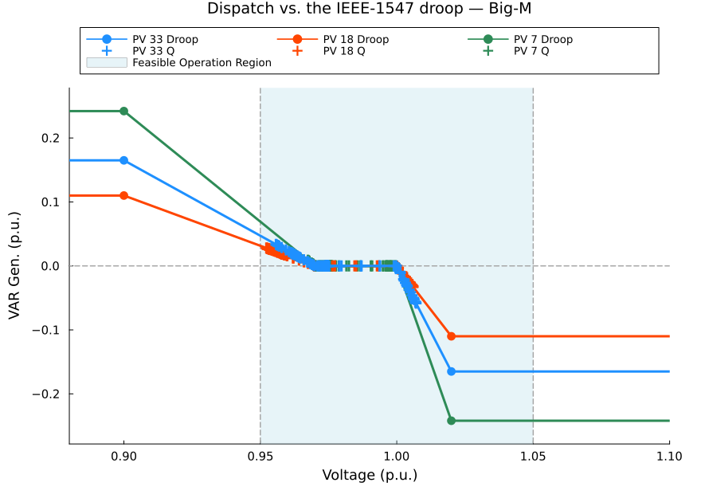
Figure 3. Every optimised operating point, plotted against the droop curve it must satisfy. All 3 x 96 points lie on the curve.
droop_figure("lambda")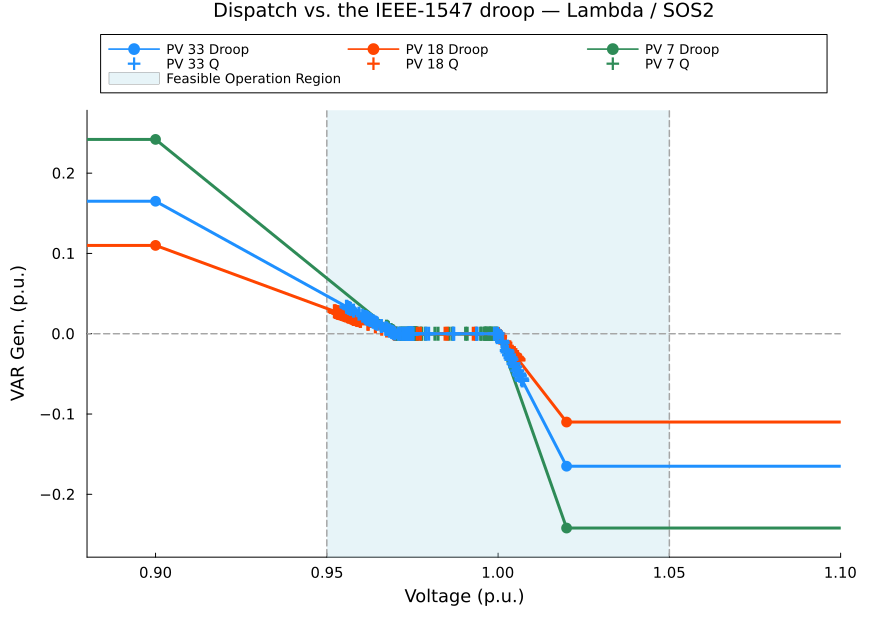
Figure 4. The same verification for the Lambda / SOS2 encoding.
droop_figure("heaviside")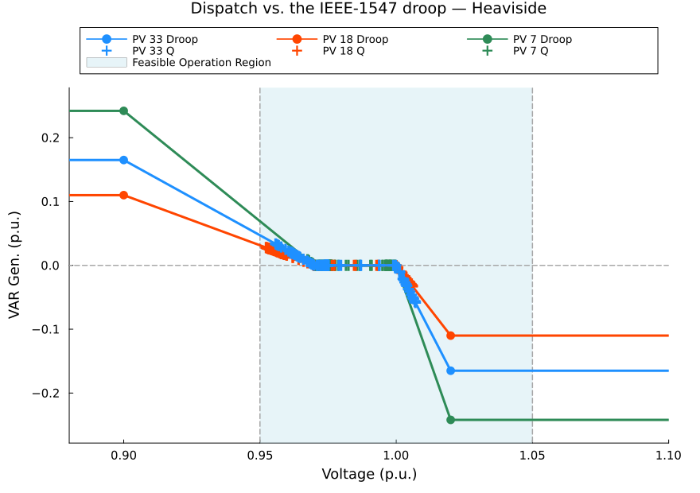
Figure 5. The same verification for the Heaviside encoding, which carries no integer variables.
Every point sits on the curve of its own inverter, and the three reactive capabilities — $\bar q = 0.242$, $0.110$ and $0.165$ p.u., that is 2420, 1100 and 1650 kVAr — are now visible as the three separated flat tails. Numerically:
Table 10. Exactness of each encoding: the largest gap between the dispatched reactive power and the curve evaluated at the dispatched voltage, over all inverters and time steps.
| method | max $\lvert q^G_i - q_i(v_i)\rvert$ (p.u.) |
|---|---|
| Big-M | 5.45e-16 |
| Lambda / SOS2 | 1.75e-15 |
| Heaviside | 1.35e-15 |
All three are at the level of floating-point round-off, which is what "exact" means here: the encodings do not approximate the curve, they reproduce it.
Note that the operating points cluster in the sloped region below nominal and in the dead-band. The saturated tails are never reached — on this feeder the voltage never drops to $V^{\text{bp}}_2$ nor rises to $V^{\text{bp}}_5$. The flat segments still have to be in the model, because the solver must be free to consider them, but they do no work here.
The three encodings, side by side
Table 11. The three encodings side by side on the single-phase case study, IVACOPF host.
| method | class | solver | variables | binaries | constraints | iters | solve (s) | curtailed (kWh) | curtailed (%) | losses (kWh) | voltage range (p.u.) |
|---|---|---|---|---|---|---|---|---|---|---|---|
| Big-M | MILP | Gurobi | 43488 | 1440 | 55776 | 4 | 25.6 | 3022.0 | 11.324 | 1926.8 | 0.9501 – 1.0071 |
| Lambda / SOS2 | MILP | Gurobi | 44640 | 1440 | 54048 | 6 | 25.1 | 3022.0 | 11.324 | 1926.8 | 0.9501 – 1.0071 |
| Heaviside | NLP | Ipopt | 41472 | 0 | 51456 | 3 | 43.1 | 3022.1 | 11.324 | 1926.8 | 0.9501 – 1.0071 |
The three rows agree on every physical quantity. Curtailed energy matches to four significant figures, losses to five, and the voltage range is identical to four decimals. The residual differences are the NLP solver's convergence tolerance, not a modelling difference — which is the empirical statement of the claim that these are three encodings of one curve.
What differs is the machinery. Heaviside adds no variables at all; Big-M and Lambda each add 1440 binaries — five per inverter per time step — and that count grows with inverters × time steps, which is the scaling wall for the integer methods. Big-M reached its answer in fewer successive-linearisation passes here, but iteration counts of this kind are case-specific and should not be read as a general ranking.
Heaviside's fewer passes do not translate into less total time, because a pass is not the same amount of work in the two solver worlds. Each Heaviside iteration asks Ipopt to run its interior-point method to convergence on the nonlinear system — roughly 14 s per pass here — while each Big-M or Lambda iteration asks Gurobi to resolve a model that is still mostly linear, with only 1440 binaries riding on top of it — 4-6 s per pass. That per-iteration cost, not the pass count, is what makes Heaviside the slowest of the three despite needing the fewest of them.
These timings come from a single run on one machine with one solver configuration, and the successive-linearisation loop rebuilds the model from scratch each pass. Read them as orders of magnitude, not as a ranking of the encodings: the few seconds between Big-M and Lambda here are well inside run-to-run variation, and reversing on another machine would surprise nobody.
Which host to believe: the exact power flow decides
Running the same case on both hosts turns this from a puzzle into a measurement. Same feeder, same droop, same inverters, same objective; only the network model differs:
Table 12. The two single-phase hosts disagree by a factor of fifty on curtailed energy.
| host | curtailed | at its own worst-curtailed step |
|---|---|---|
| IVACOPF | 3022 kWh | $q^G = 0$, $\lvert S\rvert/S_{\max} = 0.38$, no bus at a voltage limit |
| LinDistFlow | 60.5 kWh | $\lvert S\rvert/S_{\max} = 1.001$ — the inverter is at its rating |
A factor of fifty. The tempting reading is that IVACOPF curtails for no reason. The test that settles it is to stop asking either model about itself: take each dispatch, solve the exact AC power flow for those injections with a backward/forward sweep, and check the result against the physics both models claim to represent.
Table 13. The exact-power-flow audit of the single-phase case, which settles the disagreement of Table 12.
| dispatch | its own $v$ vs the true AC $v$ | droop residual at the true voltage | steps outside $[0.95, 1.05]$ |
|---|---|---|---|
| LinDistFlow | off by $7.8\times10^{-3}$ p.u. | $6.1\times10^{-2}$ p.u. | 17 |
| IVACOPF | $9.6\times10^{-9}$ | $7.9\times10^{-8}$ | 0 |
That is decisive, and it runs the other way from the tempting reading. LinDistFlow's 60.5 kWh is not achievable. Put its own dispatch on the real network and the inverters sit off their droop curves by 6 % of rating — they would not produce that reactive power at those voltages — and seventeen quarter-hours fall below the lower voltage limit. It buys its low curtailment by neglecting losses and by taking the voltage drop as $-(RP + XQ)/V^{\mathrm{nom}}$, and the dispatch it returns cannot be delivered.
The IVACOPF dispatch reproduces the exact AC solution to nine decimal places, sits on the droop to $8\times10^{-8}$, and violates nothing. Its 3022 kWh is the physical answer.
A further check supports it. Starting the linearisation from the LinDistFlow solution rather than a flat profile converges to the identical 3022.0 kWh from a completely different starting point, so the answer is a property of the model's physics rather than of the path taken to it.
Use :ivacopf for anything quantitative: it is the accurate model, and it is the one selected on accuracy grounds in [11]. :lindistflow earns its place as a fast convex first look and as a starting point for IVACOPF (below), but its dispatch should not be reported as a result.
What remains genuinely open is why the binding mechanism is so indirect — at the worst-curtailed step nothing sits at a limit, yet the exact power flow confirms that more injection is not deliverable under the droop. Worth understanding before building curtailment studies on any host.
Impact of Volt–Var droop control on feeder voltage regulation
The comparison so far has been between encodings. The more useful comparison is against not having the inverters at all. The base case is the same feeder and the same demand with no smart inverters, solved by a backward/forward sweep power flow.
buses = 1:case.n_bus
p = plot(xlabel = "bus", ylabel = "voltage (p.u.)", legend = :topright,
title = "Daily voltage envelope, with and without smart inverters",
xticks = [1, 5, 10, 15, 20, 25, 30, 33], xlims = (1, 33))
plot!(p, buses, collect(Float64, case.V_base_max), lw = 2, ls = :dash,
color = :grey65, label = "no inverters — max")
plot!(p, buses, collect(Float64, case.V_base_min), lw = 2, ls = :dash,
color = :grey35, label = "no inverters — min")
plot!(p, buses, collect(Float64, runs["lambda"].V_with_max), lw = 2.2,
color = :darkorange2, label = "with inverters — max")
plot!(p, buses, collect(Float64, runs["lambda"].V_with_min), lw = 2.2,
color = :dodgerblue4, label = "with inverters — min")
hline!(p, [case.Vmin_limit, case.Vmax_limit], ls = :dot, lw = 1.5, color = :red,
label = "limits")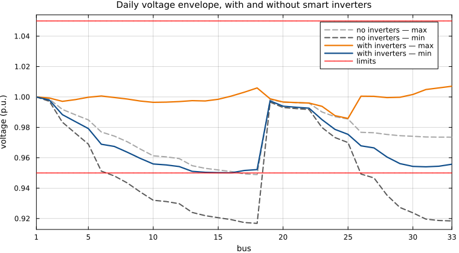
Figure 6. Daily voltage envelope along the feeder, with and without the smart inverters. The droop lifts the low end of the envelope off the lower limit.
Without the inverters the feeder violates its lower voltage limit: the minimum across the day reaches
0.9168 p.u. at the ends of the feeder, against a limit of 0.95 p.u.
With the droop-controlled inverters the whole envelope sits inside the band: the worst-case voltage rises to 0.9501 p.u. and the feeder complies.
The reactive support is not a marginal improvement here — it is what makes the feeder operable at all. Rerun the same case with the curve flattened to $q \equiv 0$, so the inverters still deliver active power but provide no reactive support, and the OPF is infeasible at these voltage limits. There is no active-power dispatch that keeps this feeder inside $[0.95, 1.05]$ without Volt-VAr control.
Following a single inverter through the day shows the mechanism:
r = runs["lambda"]
i = 2 # the inverter at bus 18, at the end of the feeder
b = case.DG_SET[i]
V = collect(Float64, r.Vdg_series[i])
Q = collect(Float64, r.Qdg_series[i])
P = collect(Float64, r.Pdg_series[i])
A = collect(Float64, case.avail_kW[i])
p1 = plot(hours, V, lw = 2, color = :dodgerblue4, label = "v at bus $b",
ylabel = "voltage (p.u.)", xticks = 0:3:24, xlims = (0, 24), legend = :topleft)
hline!(p1, [case.Vmin_limit], ls = :dot, color = :red, label = "lower limit")
hline!(p1, [Vbp[3], Vbp[4]], ls = :dash, color = :grey55, alpha = 0.8,
label = "dead-band edges")
p2 = plot(hours, Q, lw = 2, color = :seagreen, label = "reactive output",
ylabel = "kVAr", xticks = 0:3:24, xlims = (0, 24), legend = :bottomright)
hline!(p2, [0], color = :black, lw = 0.6, alpha = 0.5, label = false)
p3 = plot(hours, A, lw = 2, ls = :dash, color = :grey45, label = "available",
xlabel = "hour of day", ylabel = "kW", xticks = 0:3:24, xlims = (0, 24),
legend = :topleft)
plot!(p3, hours, P, lw = 2, color = :darkorange2, fillrange = 0, fillalpha = 0.15,
label = "delivered")
plot(p1, p2, p3, layout = (3, 1), size = (780, 700), link = :x,
left_margin = 5Plots.mm)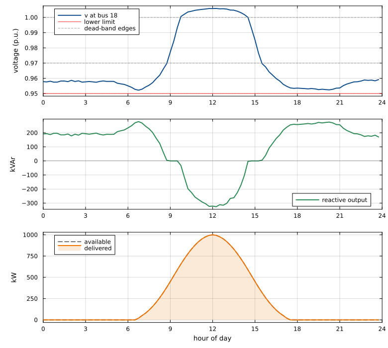
Figure 7. One inverter over the day: terminal voltage, reactive output and active output, showing the droop responding to the voltage it senses.
Bus 18 sits at the far end of the main feeder, so it swings furthest and exercises the whole curve in a single day. Read the top two panels together and the droop law is simply visible:
- Overnight and early morning, voltage sits near 0.958 p.u., below the dead-band. The inverter is on the upper sloped segment and injects about 200 kVAr to hold the voltage up.
- Around 08:45, PV output pushes the voltage up through $V^{\text{bp}}_3 = 0.97$. The inverter enters the dead-band and reactive output goes to exactly zero — the flat stretch in the middle panel, lasting until roughly 09:45.
- Mid-morning onward, voltage crosses $V^{\text{bp}}_4 = 1.00$ and climbs to about 1.006 p.u. by midday. Now on the lower sloped segment, the inverter absorbs up to 320 kVAr to push back against the PV-driven voltage rise.
- Late afternoon, the sequence reverses, back through the dead-band and into injection for the evening.
Every one of those transitions happens at a breakpoint of the curve, with no set-point sent from anywhere: the inverter is reading its own terminal voltage, and the OPF has scheduled the feeder knowing exactly what it will do. The bottom panel shows this inverter delivering all the active power available to it — the reactive support is enough here, so nothing is curtailed at bus 18.
Three phases
Everything so far has been single-phase. Real low-voltage feeders are not: loads connect between one phase and neutral, so the phases carry different currents and sit at different voltages, and an inverter on phase 1 sees a different terminal voltage from its neighbour on phase 2.
The question this section answers is not whether a three-phase network model can be built — it can — but what changes in the droop encodings when it is. The short answer is nothing, and the sections that follow are about why that is worth knowing.
To make that answer testable rather than merely plausible, these sections carry two three-phase hosts — a linear one and a near-exact one — and runs all three encodings on both. Six runs, one curve, and a clean split between what the encoding is responsible for and what the network model is.
Both feeders used below are real Electricity North West low-voltage networks from the Low Voltage Network Solutions project, Kron-reduced to three wires: network_5_Feeder_2 [14] for the case study and network_17_Feeder_6 [15] for the scalability check. The Kron reduction follows [16], and the conductor impedances are those of [17].
The three-phase hosts
The droop needs a host, and this tutorial provides two three-phase ones — deliberately, because the pair makes the separation between encoding and host measurable rather than merely asserted:
Table 14. The two three-phase hosts, and the script family implementing each.
| script family | model | class | solve |
|---|---|---|---|
LinDist3Flow_*.jl | LinDist3Flow — multiphase linearised branch flow [12] | linear approximation | one pass |
IVACOPF3Ph_*.jl | IVACOPF — three-phase current-voltage AC-OPF [4] | near-exact AC | successive linearisation, iterated |
Both are set out in full below — briefly, because the subject of this page is the droop, not the network model — and both carry the same three droop blocks, the same feeder, the same fleet and the same objective. Everything that is shared between them, the inverter model, is stated once:
\[\begin{aligned} p_i^{G} &\le \bar p_i(t) & &\text{irradiance ceiling}\\ p_i^{\mathrm{curt}} &= \bar p_i(t) - p_i^{G} \;\ge\; 0 & &\text{curtailment}\\ \cos\theta_l\; p_i^{G} + \sin\theta_l\; q_i^{G} &\in [-S_i^{\max},\, S_i^{\max}], \quad \theta_l = \tfrac{l\pi}{16},\; l = 1,\dots,16 & &\text{capability polygon}\\ q_i^{G} &= q_i\!\left(v_{b(i)}^{\varphi(i)}\right) & &\text{the droop}\\[2pt] \min \; & \textstyle\sum_{i,t} p_i^{\mathrm{curt}} & &\text{objective} \end{aligned} \tag{30}\]
The last two lines are the whole point of the page: $q_i(\cdot)$ is the IEEE 1547 curve, encoded exactly by Big-M, Lambda/SOS2 or Heaviside, and $v_{b(i)}^{\varphi(i)}$ is the one scalar each host has to supply.
LinDist3Flow: the linear host
The multiphase form of the LinDistFlow linearisation [3], from Gan and Low [12]. Each line carries a 3×3 phase impedance $Z$ rather than a scalar, and the phases couple. Starting from $\lvert V_j\rvert^2 = \lvert V_i - Z I\rvert^2$, dropping the quadratic term and assuming voltages stay near-balanced gives, per phase $\varphi$:
\[w_j^{\varphi} = w_i^{\varphi} - \sum_{\psi} \Big( a^R_{\varphi\psi} P_{ij}^{\psi} + a^X_{\varphi\psi} Q_{ij}^{\psi} \Big), \qquad \begin{aligned} a^R_{\varphi\psi} &= 2\,\mathrm{Re}\!\left(\alpha^{\psi-\varphi} Z_{\varphi\psi}\right)\\ a^X_{\varphi\psi} &= 2\,\mathrm{Im}\!\left(\alpha^{\psi-\varphi} Z_{\varphi\psi}\right) \end{aligned} \tag{31}\]
with $w = \lvert V\rvert^2$ the squared voltage magnitude and $\alpha = e^{-j2\pi/3}$ the 120° rotation. The $\pm\sqrt{3}$ cross-terms in the published form of these matrices are that rotation written out. Two checks are worth carrying: for a single phase $\alpha^0 = 1$ gives $a^R = 2r$ and $a^X = 2x$, recovering $w_j = w_i - 2(rP + xQ)$; and for diagonal $Z$ the matrices are diagonal and the phases decouple into three independent LinDistFlows.
The implementation works in magnitude rather than squared magnitude ($w_j - w_i \approx 2 V^{\mathrm{nom}}(v_j - v_i)$ near nominal) so that the droop breakpoints stay in ordinary p.u. voltage. That done, the complete host is four equations — power balance per bus and per phase, the coupled drop, the slack, and the voltage limits:
\[\begin{aligned} v_0^{\varphi} &= V^{\mathrm{nom}} & &\forall \varphi \in \Psi\\ p_j^{G,\varphi} - p_j^{L,\varphi} &= \sum_{k:(j,k)\in\mathcal{L}} P_{jk}^{\varphi} - \sum_{i:(i,j)\in\mathcal{L}} P_{ij}^{\varphi} & &\forall j \in \mathcal{B},\ \varphi \in \Psi\\ q_j^{G,\varphi} - q_j^{L,\varphi} &= \sum_{k:(j,k)\in\mathcal{L}} Q_{jk}^{\varphi} - \sum_{i:(i,j)\in\mathcal{L}} Q_{ij}^{\varphi} & &\forall j \in \mathcal{B},\ \varphi \in \Psi\\ v_j^{\varphi} &= v_i^{\varphi} - \sum_{\psi \in \Psi} \Big( \tilde a^R_{\varphi\psi} P_{ij}^{\psi} + \tilde a^X_{\varphi\psi} Q_{ij}^{\psi} \Big) & &\forall (i,j) \in \mathcal{L},\ \varphi \in \Psi\\ V^{\min} &\le v_j^{\varphi} \le V^{\max} & &\forall j \in \mathcal{B},\ \varphi \in \Psi \end{aligned} \tag{32}\]
with $\Psi = \{a,b,c\}$ the phase set, $\varphi$ and $\psi$ phases within it, and $\tilde a = a / (2V^{\mathrm{nom}})$ the magnitude-form coefficients. Note what is absent: there is no current variable and no loss term. That is exactly what buys the linearity, and exactly what it costs.
# 3×3 drop coefficients, once per line
const ALPHA = exp(-2π * im / 3)
function drop_matrices(Z) # Z is 3×3, per unit
aR = zeros(3, 3); aX = zeros(3, 3)
for p in 1:3, q in 1:3
c = ALPHA^(p - q) * conj(Z[p, q])
aR[p, q] = 2 * real(c); aX[p, q] = -2 * imag(c)
end
return aR ./ (2 * VNOM), aX ./ (2 * VNOM) # magnitude form
end
@variable(model, VLIM[1] <= v[1:nb, PHASES, 1:T] <= VLIM[2]) # voltage limits
@constraint(model, [φ in PHASES, t in 1:T], v[islack, φ, t] == VNOM)
# phase-coupled voltage drop
@constraint(model, [k in 1:nbr, φ in PHASES, t in 1:T],
v[bus_id[BR[k].to], φ, t] == v[bus_id[BR[k].from], φ, t]
- sum(AR[k][φ, ψ] * P[k, ψ, t] + AX[k][φ, ψ] * Q[k, ψ, t] for ψ in PHASES))
# power balance, per bus AND per phase; losses neglected
@constraint(model, [b in 1:nb, φ in PHASES, t in 1:T],
netP[b, φ, t] == sum(P[k, φ, t] for k in out_br[b]; init = zero(AffExpr))
- sum(P[k, φ, t] for k in in_br[b]; init = zero(AffExpr)))
@constraint(model, [b in 1:nb, φ in PHASES, t in 1:T],
netQ[b, φ, t] == sum(Q[k, φ, t] for k in out_br[b]; init = zero(AffExpr))
- sum(Q[k, φ, t] for k in in_br[b]; init = zero(AffExpr)))where netP/netQ collect the substation injection, the inverters at that bus and phase, and the local load.
Three-phase IVACOPF: the near-exact host
The current-voltage AC optimal power flow of Soltani, Khorsand and Ma [4], in its native three-phase unbalanced form — the setting [4] was written for. Its appeal here is structural. Write the network in rectangular current and voltage coordinates and the line equations become exactly linear, mutual coupling and all; the only nonlinearity left is the $v \cdot I$ power balance and the voltage magnitude, and both live at the buses. In a distribution feeder the buses are the endpoints and the lines are everything else, so this confines the nonlinearity to a small, well-behaved part of the model instead of spreading it along every branch, as a power-voltage formulation does.
The formulation is that of Soltani, Khorsand and Ma [4]; the equations are numbered here in this tutorial's own sequence. Bus set $\Upsilon$, phase set $\Psi = \{a,b,c\}$ with phases indexed $\varphi$ and $p$; the time index $t \in \{1,\dots,96\}$ is suppressed throughout.
Line current constraints. For the line from $n$ to $m$, with 3×3 impedance $Z_{nm}^{\varphi p} = R_{nm}^{\varphi p} + jX_{nm}^{\varphi p}$ and shunt admittance $y_{nm}^{p,k}$:
\[V_n^{\varphi} - V_m^{\varphi} = \sum_{p\in\Psi} Z_{nm}^{\varphi p} I_{nm}^{p} \;-\; \tfrac{1}{2}\sum_{p\in\Psi} Z_{nm}^{\varphi p} \Big( \sum_{k\in\Psi} y_{nm}^{p,k} V_n^{k} \Big), \qquad \forall \varphi \in \Psi \tag{33}\]
Three physical contributions, in two sums: the current in the same phase (the $p = \varphi$ term), the currents in the other phases reaching this one through the mutual impedances, and the shunt current. Splitting (33) into real and imaginary parts gives, for the Kron-reduced three-wire feeders used here — where $y = 0$,
\[\begin{aligned} v_n^{\mathrm{re},\varphi} - v_m^{\mathrm{re},\varphi} &= \sum_{p\in\Psi}\Big( R_{nm}^{\varphi p} I_{nm}^{\mathrm{re},p} - X_{nm}^{\varphi p} I_{nm}^{\mathrm{im},p} \Big)\\ v_n^{\mathrm{im},\varphi} - v_m^{\mathrm{im},\varphi} &= \sum_{p\in\Psi}\Big( R_{nm}^{\varphi p} I_{nm}^{\mathrm{im},p} + X_{nm}^{\varphi p} I_{nm}^{\mathrm{re},p} \Big) \end{aligned} \qquad \forall (n,m) \in \mathcal{L},\ \varphi \in \Psi \tag{34}\]
These are exact and linear. No rotation operator appears, nothing is transposed, and no near-balance is assumed anywhere — compare the $\alpha^{\psi-\varphi}$ of LinDist3Flow, which is precisely where that host's balanced-voltage assumption enters.
Bus current injection — KCL, per bus and phase, also exact and linear:
\[I_n^{\mathrm{re},\varphi} = \sum_{m:(n,m)\in\mathcal{L}} I_{nm}^{\mathrm{re},\varphi} - \sum_{k:(k,n)\in\mathcal{L}} I_{kn}^{\mathrm{re},\varphi}, \qquad I_n^{\mathrm{im},\varphi} = \sum_{m:(n,m)\in\mathcal{L}} I_{nm}^{\mathrm{im},\varphi} - \sum_{k:(k,n)\in\mathcal{L}} I_{kn}^{\mathrm{im},\varphi} \tag{35}\]
Power balance — the first of the two nonlinear relations:
\[\begin{aligned} p_n^{G,\varphi} - p_n^{L,\varphi} &= v_n^{\mathrm{re},\varphi} I_n^{\mathrm{re},\varphi} + v_n^{\mathrm{im},\varphi} I_n^{\mathrm{im},\varphi}\\ q_n^{G,\varphi} - q_n^{L,\varphi} &= v_n^{\mathrm{im},\varphi} I_n^{\mathrm{re},\varphi} - v_n^{\mathrm{re},\varphi} I_n^{\mathrm{im},\varphi} \end{aligned} \qquad \forall n \in \Upsilon,\ \varphi \in \Psi \tag{36}\]
Linearised power balance. Each product $xy$ in (36) is replaced by its first-order Taylor expansion about the previous iterate, $xy \approx x^{\circ}y + y^{\circ}x - x^{\circ}y^{\circ}$, where $\circ$ marks a value fixed from the previous pass — a constant, not a variable:
\[\begin{aligned} \mathcal{P}_n^{\varphi} &:= v_n^{\mathrm{re},\varphi\circ} I_n^{\mathrm{re},\varphi} + I_n^{\mathrm{re},\varphi\circ} v_n^{\mathrm{re},\varphi} + v_n^{\mathrm{im},\varphi\circ} I_n^{\mathrm{im},\varphi} + I_n^{\mathrm{im},\varphi\circ} v_n^{\mathrm{im},\varphi} - v_n^{\mathrm{re},\varphi\circ} I_n^{\mathrm{re},\varphi\circ} - v_n^{\mathrm{im},\varphi\circ} I_n^{\mathrm{im},\varphi\circ}\\ \mathcal{Q}_n^{\varphi} &:= v_n^{\mathrm{im},\varphi\circ} I_n^{\mathrm{re},\varphi} + I_n^{\mathrm{re},\varphi\circ} v_n^{\mathrm{im},\varphi} - v_n^{\mathrm{re},\varphi\circ} I_n^{\mathrm{im},\varphi} - I_n^{\mathrm{im},\varphi\circ} v_n^{\mathrm{re},\varphi} - v_n^{\mathrm{im},\varphi\circ} I_n^{\mathrm{re},\varphi\circ} + v_n^{\mathrm{re},\varphi\circ} I_n^{\mathrm{im},\varphi\circ} \end{aligned} \tag{37}\]
which are then set equal to the net injection at each class of bus:
\[\begin{aligned} p_0^{\mathrm{grid},\varphi} &= \mathcal{P}_0^{\varphi}, & q_0^{\mathrm{grid},\varphi} &= \mathcal{Q}_0^{\varphi} & &\text{substation}\\ -p_n^{L,\varphi} &= \mathcal{P}_n^{\varphi}, & -q_n^{L,\varphi} &= \mathcal{Q}_n^{\varphi} & &\text{load-only bus and phase}\\ p_i^{G} - p_n^{L,\varphi} &= \mathcal{P}_n^{\varphi}, & q_i^{G} - q_n^{L,\varphi} &= \mathcal{Q}_n^{\varphi} & &\text{inverter } i \text{ at } (n,\varphi) \end{aligned} \tag{38}\]
The last line is where the droop enters the network: $q_i^{G}$ is exactly the variable the three encodings constrain.
Voltage magnitude, and its linearisation — the second nonlinear relation, and the single quantity the droop module reads:
\[v_n^{\varphi} = \sqrt{\big(v_n^{\mathrm{re},\varphi}\big)^2 + \big(v_n^{\mathrm{im},\varphi}\big)^2} \;\;\longrightarrow\;\; v_n^{\varphi} = \frac{v_n^{\mathrm{re},\varphi\circ}} {\sqrt{\big(v_n^{\mathrm{re},\varphi\circ}\big)^2 + \big(v_n^{\mathrm{im},\varphi\circ}\big)^2}}\, v_n^{\mathrm{re},\varphi} + \frac{v_n^{\mathrm{im},\varphi\circ}} {\sqrt{\big(v_n^{\mathrm{re},\varphi\circ}\big)^2 + \big(v_n^{\mathrm{im},\varphi\circ}\big)^2}}\, v_n^{\mathrm{im},\varphi} \tag{39}\]
Voltage limits. The band every bus and phase must stay inside:
\[V^{\min} \le v_n^{\varphi} \le V^{\max}, \qquad \forall n \in \Upsilon,\ \varphi \in \Psi \tag{40}\]
Thermal line limits. The conductor rating, per line and phase:
\[\big(I_{nm}^{\mathrm{re},\varphi}\big)^2 + \big(I_{nm}^{\mathrm{im},\varphi}\big)^2 \le \big(I_{nm}^{\max,\varphi}\big)^2, \qquad \forall (n,m) \in \mathcal{L},\ \varphi \in \Psi \tag{41}\]
Constraint (41) is worth pausing on: IVACOPF carries the line current as a decision variable, so a thermal limit is something you simply write. LinDist3Flow has no $I$ to write it about. It is quadratic, so the scripts offer it as a polygon inscribing the circle — keeping the model an MILP — and leave it off by default, because on these Electricity North West (ENWL) feeders [14], [15] the peak flow is about a fifth of the conductor rating; the loading is reported either way.
Slack reference. The three-phase substation, which is also the flat start prescribed by Soltani, Khorsand and Ma [4]:
\[v_0^{\mathrm{re},\varphi} = \cos\theta_{\varphi},\quad v_0^{\mathrm{im},\varphi} = \sin\theta_{\varphi}, \qquad \theta = (0°,\, -120°,\, +120°) \tag{42}\]
Seeding all three phases at $1\angle 0°$ instead is a silent and expensive mistake: the mutual terms then add rather than largely cancelling.
Convergence. After each pass, the linearisation error is measured against the true nonlinear relations — not against the model's own residual. Following [4], three metrics are used: the maximum absolute active power balance error (MAPB), the maximum absolute reactive power balance error (MRPB), and the maximum voltage-magnitude error (MVM). Writing (36) minus (37) and (39) exact minus linearised,
\[\begin{aligned} \text{MAPB} &= \max_{n\in\Upsilon,\,\varphi\in\Psi} \Big| \big(v_n^{\mathrm{re},\varphi} I_n^{\mathrm{re},\varphi} + v_n^{\mathrm{im},\varphi} I_n^{\mathrm{im},\varphi}\big) - \mathcal{P}_n^{\varphi} \Big|\\ \text{MRPB} &= \max_{n\in\Upsilon,\,\varphi\in\Psi} \Big| \big(v_n^{\mathrm{im},\varphi} I_n^{\mathrm{re},\varphi} - v_n^{\mathrm{re},\varphi} I_n^{\mathrm{im},\varphi}\big) - \mathcal{Q}_n^{\varphi} \Big|\\ \text{MVM} &= \max_{n\in\Upsilon,\,\varphi\in\Psi} \Big| \sqrt{\big(v_n^{\mathrm{re},\varphi}\big)^2 + \big(v_n^{\mathrm{im},\varphi}\big)^2} - v_n^{\varphi} \Big| \end{aligned} \tag{43}\]
the loop repeats with a refreshed $\circ$ point until $\max(\text{MAPB}, \text{MRPB}, \text{MVM}) < \epsilon$, here $10^{-6}$. Checking against the true relations is what makes the converged point a genuine power-flow solution rather than a solution of the approximation — and the audit further down confirms it independently.
The three-phase IVACOPF host in Julia
The whole host, with _pr marking a value carried over from the previous pass:
# ---- slack reference: 1∠0°, 1∠−120°, 1∠+120° — eq. (42) --------------------------
const V0 = ComplexF64[1, exp(-2π*im/3), exp(2π*im/3)]
@constraint(model, [φ in PHASES, t in 1:T], v_r[islack, φ, t] == real(V0[φ]))
@constraint(model, [φ in PHASES, t in 1:T], v_im[islack, φ, t] == imag(V0[φ]))
# ---- line current constraints, eq. (34): exact, linear, fully phase-coupled ---------
@constraint(model, [k in 1:nbr, φ in PHASES, t in 1:T],
v_r[bus_id[BR[k].from], φ, t] - v_r[bus_id[BR[k].to], φ, t] ==
sum(Rm[k][φ,ψ] * Ibr_r[k,ψ,t] - Xm[k][φ,ψ] * Ibr_im[k,ψ,t] for ψ in PHASES))
@constraint(model, [k in 1:nbr, φ in PHASES, t in 1:T],
v_im[bus_id[BR[k].from], φ, t] - v_im[bus_id[BR[k].to], φ, t] ==
sum(Rm[k][φ,ψ] * Ibr_im[k,ψ,t] + Xm[k][φ,ψ] * Ibr_r[k,ψ,t] for ψ in PHASES))
# ---- bus current injection, eq. (35): KCL per bus and phase -------------------------
@constraint(model, [b in 1:nb, φ in PHASES, t in 1:T],
Ibs_r[b,φ,t] == sum(Ibr_r[k,φ,t] for k in out_br[b]; init = zero(AffExpr))
- sum(Ibr_r[k,φ,t] for k in in_br[b]; init = zero(AffExpr)))
@constraint(model, [b in 1:nb, φ in PHASES, t in 1:T],
Ibs_im[b,φ,t] == sum(Ibr_im[k,φ,t] for k in out_br[b]; init = zero(AffExpr))
- sum(Ibr_im[k,φ,t] for k in in_br[b]; init = zero(AffExpr)))
# ---- power balance, eq. (36), linearised as eq. (37)–(38) ---------------------------
Plin(b,φ,t) = v_r_pr[b,φ,t] * Ibs_r[b,φ,t] + Ibs_r_pr[b,φ,t] * v_r[b,φ,t] +
v_im_pr[b,φ,t] * Ibs_im[b,φ,t] + Ibs_im_pr[b,φ,t] * v_im[b,φ,t] -
v_r_pr[b,φ,t] * Ibs_r_pr[b,φ,t] - v_im_pr[b,φ,t] * Ibs_im_pr[b,φ,t]
Qlin(b,φ,t) = v_im_pr[b,φ,t] * Ibs_r[b,φ,t] + Ibs_r_pr[b,φ,t] * v_im[b,φ,t] -
v_r_pr[b,φ,t] * Ibs_im[b,φ,t] - Ibs_im_pr[b,φ,t] * v_r[b,φ,t] -
v_im_pr[b,φ,t] * Ibs_r_pr[b,φ,t] + v_r_pr[b,φ,t] * Ibs_im_pr[b,φ,t]
@constraint(model, [b in 1:nb, φ in PHASES, t in 1:T], netP[b,φ,t] == Plin(b,φ,t))
@constraint(model, [b in 1:nb, φ in PHASES, t in 1:T], netQ[b,φ,t] == Qlin(b,φ,t))
# ↑ where the droop meets the network
# ---- voltage magnitude, eq. (39) — this is the v the droop reads -------------------
@constraint(model, [b in 1:nb, φ in PHASES, t in 1:T],
v[b,φ,t] == (v_r_pr[b,φ,t] / hypot(v_r_pr[b,φ,t], v_im_pr[b,φ,t])) * v_r[b,φ,t]
+ (v_im_pr[b,φ,t] / hypot(v_r_pr[b,φ,t], v_im_pr[b,φ,t])) * v_im[b,φ,t])
# ---- thermal line limit, eq. (41), as a linear polygon inscribing the circle --------
for l in 1:IMAX_SEG
θ = l * π / IMAX_SEG
@constraint(model, [k in 1:nbr, φ in PHASES, t in 1:T],
cos(θ) * Ibr_r[k,φ,t] + sin(θ) * Ibr_im[k,φ,t] <= BR[k].imax)
@constraint(model, [k in 1:nbr, φ in PHASES, t in 1:T],
cos(θ) * Ibr_r[k,φ,t] + sin(θ) * Ibr_im[k,φ,t] >= -BR[k].imax)
endand the stop test, applied to the exact relations after each pass:
MAPB = maximum(abs(Vr[b,φ,t]*Ibs_r_v[b,φ,t] + Vi[b,φ,t]*Ibs_im_v[b,φ,t] - netP_v[b,φ,t])
for b in 1:nb, φ in PHASES, t in 1:T)
MRPB = maximum(abs(Vi[b,φ,t]*Ibs_r_v[b,φ,t] - Vr[b,φ,t]*Ibs_im_v[b,φ,t] - netQ_v[b,φ,t])
for b in 1:nb, φ in PHASES, t in 1:T)
MVM = maximum(abs(hypot(Vr[b,φ,t], Vi[b,φ,t]) - V[b,φ,t])
for b in 1:nb, φ in PHASES, t in 1:T)
v_r_pr .= Vr; v_im_pr .= Vi; Ibs_r_pr .= Ibs_r_v; Ibs_im_pr .= Ibs_im_v # refresh ∘
max(MAPB, MRPB, MVM) < TOL && breakWhere the linearisation loop starts
A flat start ($1\angle0°,\,1\angle{-120°},\,1\angle{+120°}$ with all currents zero) is what Soltani, Khorsand and Ma [4] prescribe, and what the scripts fall back to with TP_WARMSTART=flat. By default they do something cheaper to converge from: one exact three-phase backward/forward sweep per time step, at full PV and zero VArs, which costs a few seconds and hands the first linearisation a physically consistent state instead of a guess. This is the three-phase analogue of the package's warm_start = :lindistflow, and the same sweep is reused afterwards to audit the answer.
What changes for the droop: one index
Here is the whole three-phase interface, in every encoding:
vpv(i, t) = v[PV[i].bus, PV[i].phase, t] # the voltage inverter i actually sensesA single-phase inverter connected line-to-neutral senses the voltage of its own phase at its own bus. Nothing in Big-M, Lambda or Heaviside cares whether that terminal is identified by a bus, or by a bus and a phase. Each asks the host for one scalar voltage variable, and constrains one scalar reactive output against it.
That is why the three droop blocks below are the same algebra as their single-phase counterparts, with v[d,h,m] replaced by vpv(i,t) — and why the same three blocks drop unchanged into either host. In LinDist3Flow v is a decision variable directly; in IVACOPF it is the linearised magnitude (39). The droop neither knows nor cares.
Lambda / SOS2 — weights shared between the sensed voltage and the reactive output:
@variable(model, λ[1:6, 1:npv, 1:T] >= 0)
@variable(model, z[1:5, 1:npv, 1:T], Bin)
@constraint(model, [i in 1:npv, t in 1:T], sum(λ[j, i, t] for j in 1:6) == 1)
@constraint(model, [i in 1:npv, t in 1:T], sum(z[j, i, t] for j in 1:5) == 1)
@constraint(model, [i in 1:npv, t in 1:T], λ[1, i, t] <= z[1, i, t])
@constraint(model, [j in 2:5, i in 1:npv, t in 1:T], λ[j, i, t] <= z[j-1, i, t] + z[j, i, t])
@constraint(model, [i in 1:npv, t in 1:T], λ[6, i, t] <= z[5, i, t])
@constraint(model, [i in 1:npv, t in 1:T], vpv(i, t) == sum(λ[j,i,t] * VBP[j] for j in 1:6))
@constraint(model, [i in 1:npv, t in 1:T],
Qdg[i, t] == sum(λ[j,i,t] * QSHAPE[j] * PV[i].Smax for j in 1:6))Big-M — one binary per segment, with $W = \delta v$ linearising the products:
Mbig = 1.1
@variable(model, δ[1:5, 1:npv, 1:T], Bin)
@variable(model, W2[1:npv, 1:T]); @variable(model, W4[1:npv, 1:T])
@constraint(model, [i in 1:npv, t in 1:T], sum(δ[j, i, t] for j in 1:5) == 1)
for (j, lo, hi) in ((1, 1, 2), (3, 3, 4), (5, 5, 6)) # flat segments
@constraint(model, [i in 1:npv, t in 1:T], vpv(i,t) >= VBP[lo] - Mbig * (1 - δ[j,i,t]))
@constraint(model, [i in 1:npv, t in 1:T], vpv(i,t) <= VBP[hi] + Mbig * (1 - δ[j,i,t]))
end
for (j, W, lo, hi) in ((2, W2, 2, 3), (4, W4, 4, 5)) # sloped segments
@constraint(model, [i in 1:npv, t in 1:T], vpv(i,t) - W[i,t] >= -Mbig * (1 - δ[j,i,t]))
@constraint(model, [i in 1:npv, t in 1:T], vpv(i,t) - W[i,t] <= Mbig * (1 - δ[j,i,t]))
@constraint(model, [i in 1:npv, t in 1:T], W[i,t] >= VBP[lo] * δ[j,i,t])
@constraint(model, [i in 1:npv, t in 1:T], W[i,t] <= VBP[hi] * δ[j,i,t])
end
@constraint(model, [i in 1:npv, t in 1:T],
Qdg[i,t] == δ[1,i,t] * PV[i].Smax
+ W2[i,t] * (-PV[i].Smax / (VBP[3] - VBP[2]))
+ δ[2,i,t] * (PV[i].Smax * VBP[3] / (VBP[3] - VBP[2]))
+ W4[i,t] * (-PV[i].Smax / (VBP[5] - VBP[4]))
+ δ[4,i,t] * (PV[i].Smax * VBP[4] / (VBP[5] - VBP[4]))
- δ[5,i,t] * PV[i].Smax)Heaviside — one closed-form masked sum, no new variables at all:
Hstep(x) = op_ifelse(op_greater_than_or_equal_to(x, 0), 1.0, 0.0)
@constraint(model, [i in 1:npv, t in 1:T],
Qdg[i,t] ==
PV[i].Smax * (Hstep(vpv(i,t) - VBP[1]) - Hstep(vpv(i,t) - VBP[2]))
+ (-PV[i].Smax / (VBP[3] - VBP[2])) * (vpv(i,t) - VBP[3]) *
(Hstep(vpv(i,t) - VBP[2]) - Hstep(vpv(i,t) - VBP[3]))
+ (-PV[i].Smax / (VBP[5] - VBP[4])) * (vpv(i,t) - VBP[4]) *
(Hstep(vpv(i,t) - VBP[4]) - Hstep(vpv(i,t) - VBP[5]))
- PV[i].Smax * (Hstep(vpv(i,t) - VBP[5]) - Hstep(vpv(i,t) - VBP[6])))Compare these with Methods A, B and C above: the algebra is identical. What has grown is the count — the binaries in Big-M and Lambda now scale with inverters × time steps on a feeder that may carry a single-phase inverter at every service connection, which is where the integer-free encoding starts to look attractive.
The three-phase case study
The case study puts twelve inverters on network_5_Feeder_2 [14], a real unbalanced low-voltage (LV) feeder — 194 buses, eighteen single-phase loads split four, five and nine across the phases — in four size classes. Because $\bar q = S_{\max}$, the four classes follow four different droop curves: same breakpoint voltages, four saturation levels. Each phase carries one inverter of each class.
Table 15. The four inverter size classes of the three-phase case study on network_5_Feeder_2 [14]. Because $\bar q = S_{\max}$, each class follows a different droop curve.
| class | $P$ rated | $S_{\max}$ | $\bar q$ (p.u.) | sites | buses |
|---|---|---|---|---|---|
| A — 3 kW | 3 kW | 3.30 kVA | 0.0330 | 3 | 184 (φ1), 145 (φ2), 142 (φ3) |
| B — 5 kW | 5 kW | 5.50 kVA | 0.0550 | 3 | 74 (φ1), 188 (φ2), 149 (φ3) |
| C — 8 kW | 8 kW | 8.80 kVA | 0.0880 | 3 | 73 (φ1), 157 (φ2), 193 (φ3) |
| D — 12 kW | 12 kW | 13.20 kVA | 0.1320 | 3 | 45 (φ1), 153 (φ2), 179 (φ3) |
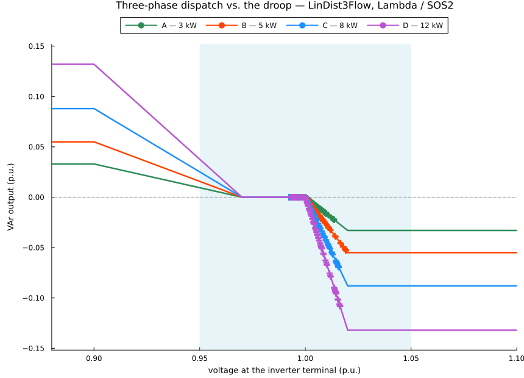
Figure 8. Three-phase dispatch against the droop, LinDist3Flow host. Four classes, four curves; a point is correct only if it lies on the curve of its own inverter.
Figure 9. The same fleet on the IVACOPF host. The points sit at different places along the curves, because the two hosts predict different terminal voltages, but never off them.
Drawn in absolute p.u. VArs, because normalising by $\bar q$ would collapse the four classes onto one line and hide the thing worth checking: a dispatch point is correct only if it lies on the curve belonging to its own inverter. All three encodings put every point on the right curve, to solver tolerance, on both hosts — the same result as single-phase, on networks that are unbalanced, multiphase and carrying a mixed fleet.
Figures 8 and 9 are not identical, and the difference is instructive: the points sit at different places along the curves, because the two hosts predict different terminal voltages. They are never off the curves. Which set of places is the real one is settled by the audit in What the exact power flow says.
The phases behave differently, which is the whole reason for modelling them separately:
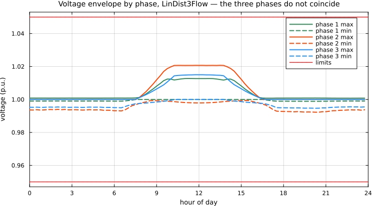
Figure 10. Voltage envelope by phase, LinDist3Flow host. The three phases do not coincide, which is the reason for modelling them separately.
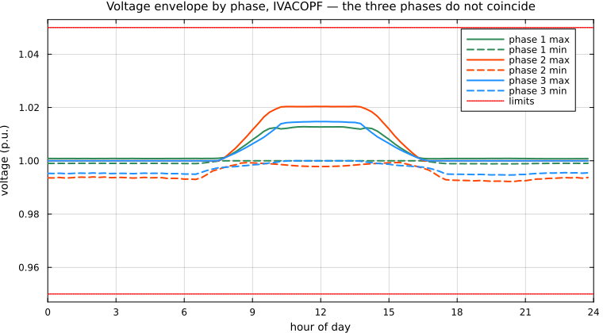
Figure 11. Voltage envelope by phase, IVACOPF host.
The two hosts, side by side
Six runs: three encodings on each of two hosts, everything else held fixed.
Table 16. Three encodings on each of two three-phase hosts, everything else held fixed. Passes is 1 for the linear host, which has no outer loop.
| host | encoding | class | solver | variables | binaries | passes | solve (s) | curtailed (kWh) | curtailed (%) | losses (kWh) | voltage range (p.u.) |
|---|---|---|---|---|---|---|---|---|---|---|---|
| LinDist3Flow | Big-M | MILP | Gurobi | 179136 | 5760 | 1 | 5.4 | 46.32 | 9.712 | not modelled | 0.9923 – 1.0207 |
| LinDist3Flow | Lambda / SOS2 | MILP | Gurobi | 183744 | 5760 | 1 | 5.1 | 46.32 | 9.712 | not modelled | 0.9923 – 1.0207 |
| LinDist3Flow | Heaviside | NLP | Ipopt | 171072 | 0 | 1 | 33.6 | 46.32 | 9.712 | not modelled | 0.9923 – 1.0207 |
| IVACOPF | Big-M | MILP | Gurobi | 402624 | 5760 | 3 | 136.1 | 42.69 | 8.952 | 14.61 | 0.9922 – 1.0204 |
| IVACOPF | Lambda / SOS2 | MILP | Gurobi | 407232 | 5760 | 3 | 288.5 | 42.69 | 8.952 | 14.61 | 0.9922 – 1.0204 |
| IVACOPF | Heaviside | NLP | Ipopt | 394560 | 0 | 3 | 142.8 | 42.69 | 8.952 | 14.61 | 0.9922 – 1.0204 |
Read Table 16 in two directions. Down each host block, the three encodings agree — same curtailment, same losses, same voltage range — which is the three-phase restatement of the single-phase result that these are three encodings of one curve. Across the two blocks, the hosts do not agree, and that difference is the network model's alone.
The gap is about 3.6 kWh, some 8 % of the curtailed energy, and it runs the opposite way from the single-phase case: here it is LinDist3Flow that curtails more. There is no paradox and no general rule — the direction depends on the feeder. What does carry over is the mechanism. LinDist3Flow drops losses from the balance entirely; IVACOPF measures them at 14.6 kWh over the day, about 3 % of the available PV energy, and having them in the model changes which dispatch clears the voltage band. A host that cannot represent losses cannot be expected to agree with one that can, in either direction.
The droop is reproduced exactly in every one of the six:
Table 17. Exactness of the encoding within each host: the largest gap between dispatched reactive power and the curve at the voltage that host reports.
| encoding | LinDist3Flow | IVACOPF |
|---|---|---|
| Big-M | 6.06e-15 | 4.37e-16 |
| Lambda / SOS2 | 8.43e-07 | 1.39e-17 |
| Heaviside | 1.09e-15 | 1.15e-15 |
That is the separation this section exists to make. Exactness of the encoding is a property of the encoding; accuracy is a property of the host. Every cell above is at round-off — the inverters sit on their curves within whatever model they are placed in — and Table 17 says nothing whatever about whether that model is right.
What the exact power flow says
To decide between the hosts you have to stop asking either model about itself. Take each solved dispatch, put it through an exact three-phase backward/forward sweep, and ask what the inverters would really have seen (Table 18):
Table 18. The exact-power-flow audit. Each solved dispatch is re-solved with a full three-phase backward/forward sweep, and compared against what the host predicted.
| host | its own $v$ vs the true AC $v$ | droop residual at the true voltage | bus-steps outside $[0.95, 1.05]$ | true voltage range (p.u.) |
|---|---|---|---|---|
| LinDist3Flow | 1.30e-03 p.u. | 8.04e-03 p.u. | 0 | 0.9922 – 1.0195 |
| IVACOPF | 1.94e-11 p.u. | 2.77e-11 p.u. | 0 | 0.9922 – 1.0204 |
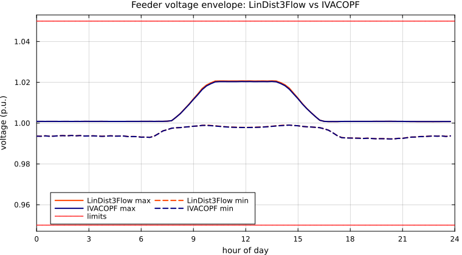
Figure 12. The two hosts' envelopes on one axis: same feeder, same dispatch problem, and a visible offset that is entirely the network model's doing.
This is the same test the single-phase section applies to LinDistFlow and IVACOPF, and it returns the same verdict on a harder network.
The IVACOPF dispatch reproduces the exact AC solution to about $2\times10^{-11}$ p.u., so the voltage each inverter was told to read is the voltage it would see, and the droop residual survives the transfer intact — it stays at round-off. The LinDist3Flow dispatch does not. Its voltages are off by $1.3\times10^{-3}$ p.u., which sounds harmless until you put it through the curve: the upper segment falls a full $\bar q$ across 0.02 p.u., a slope of $50\,\bar q$ per p.u. of voltage, so
\[1.3\times10^{-3}\;\text{p.u. of voltage} \;\times\; 50\,\bar q \;=\; 0.065\,\bar q \;\approx\; 8\times10^{-3}\ \text{p.u. of VArs}\]
which is exactly the measured residual, and about 6 % of that inverter's reactive rating. The inverters would not produce the VArs the model dispatched. A steep local control law is an error amplifier, and it is the host that decides what gets amplified.
One difference from the single-phase case is worth recording rather than glossing: here neither host violates a voltage limit — the band is simply not binding on this feeder — so LinDist3Flow's failure is confined to the droop residual. On the 33-bus feeder it was both, with seventeen quarter-hours below the lower limit as well. The failure mode is not guaranteed to announce itself in a constraint violation, which is precisely why the audit is worth running.
None of this is a defect of the droop block, and none of it is fixed by choosing a different encoding. It is the price of dropping losses from the balance and of the near-balanced-voltage assumption behind the $a^R$, $a^X$ coefficients — an assumption that is least true on exactly the kind of unbalanced LV feeder where single-phase inverters matter.
What each host costs
Table 19. Successive-linearisation passes for the three-phase IVACOPF host, Lambda encoding, measured with the error metrics of (43).
| pass | solve (s) | objective (p.u. curtailed) | MAPB | MRPB | MVM | solver status |
|---|---|---|---|---|---|---|
| 1 | 98.1 | 1.800492 | 5.09e-03 | 1.60e-03 | 9.27e-04 | OPTIMAL |
| 2 | 88.3 | 1.707866 | 4.68e-06 | 1.64e-06 | 2.84e-07 | OPTIMAL |
| 3 | 102.0 | 1.707783 | 1.01e-09 | 3.31e-12 | 7.20e-13 | OPTIMAL |
Three passes, and the error metrics fall by roughly three orders of magnitude each time — the behaviour you would expect of a Taylor expansion refreshed about its own solution. The objective moves by 5 % between the first and second pass and by $5\times10^{-5}$ between the second and third, so the first pass alone would have been meaningfully wrong and the third is essentially free insurance. All three encodings take the same three passes, and their first two passes agree to three significant figures on every metric — by the third they are all far below tolerance and what separates them is solver noise. The outer loop belongs to the host, not to the droop.
Note the second column of Table 19: each pass is a complete MILP (or NLP), so IVACOPF costs one LinDist3Flow-sized solve per pass — on a model rather more than twice the size — times the number of passes, plus a few seconds of warm-start sweeps. That is the whole of the price, and Table 18 is what it buys.
Table 20. What changes between the two three-phase hosts.
| LinDist3Flow | IVACOPF (3-phase) | |
|---|---|---|
| line equations | approximate — $\alpha$-rotated drop coefficients, near-balance assumed | exact — $\Delta V = ZI$ with full mutual coupling, nothing assumed |
| losses | dropped from the balance | modelled, via the current variables |
| line currents | not represented | decision variables, so the thermal limit (41) is writable |
| nonlinearity | none | two bus relations, $v\cdot I$ and $\lvert v\rvert$, linearised and iterated |
| solve | one pass | one MILP (or NLP) per pass, plus warm-start sweeps |
| dispatch on the real network | off the droop by a visible margin | on the droop to round-off |
The trade is the usual one, and it is the host's trade, not the encodings'. LinDist3Flow is the right tool for a fast first look, for screening, and — as the single-phase section shows — for warm-starting the accurate model. Use IVACOPF for anything quantitative.
Does it scale?
The encodings are cheap to state; the question is whether they survive a network worth calling realistic. The three LinDist3Flow scripts were run unchanged on a second real feeder from the same ENWL family — network_17_Feeder_6 [15], 3856 buses, 3855 lines, 223 single-phase loads, twenty times network_5_Feeder_2 [14] — by setting an environment variable:
TP_CASE=network_17_Feeder_6 julia --project=examples/three_phase examples/three_phase/LinDist3Flow_Lambda.jlTable 21. Scalability of the three encodings on the LinDist3Flow host, across the 194-bus network_5_Feeder_2 [14] and the 3856-bus network_17_Feeder_6 [15]. “Max droop deviation” is $\Delta$ of (29), evaluated at each host's own voltages.
| encoding | feeder | time steps | variables | binaries | solve (s) | max droop deviation |
|---|---|---|---|---|---|---|
| Lambda / SOS2 | 194-bus | 96 | 183744 | 5760 | 5.5 | 8.43e-07 |
| Big-M | 194-bus | 96 | 179136 | 5760 | 4.9 | 6.06e-15 |
| Heaviside | 194-bus | 96 | 171072 | 0 | 26.4 | 1.09e-15 |
| Lambda / SOS2 | 3856-bus | 96 | 3347712 | 5760 | 63.9 | 3.91e-07 |
| Big-M | 3856-bus | 96 | 3343104 | 5760 | 60.5 | 1.84e-07 |
| Heaviside | 3856-bus | 96 | 3335040 | 0 | did not solve | — |
| Heaviside | 3856-bus | 12 | 416880 | 0 | 543.8 | 6.73e-16 |
Two things to take from this.
The mixed-integer encodings scale. Big-M and Lambda both carry a 3.3-million-variable model over the full 96-step day and solve it in about a minute — roughly twelve times the small feeder's solve for eighteen times the network, and the droop is still reproduced to solver tolerance. The binary count does not move at all between the two feeders, because it depends on inverters × time steps and not on network size. That is the useful property: enlarging the network grows the linear part of the problem, not the combinatorial part.
The integer-free encoding does not. Heaviside is the cheapest of the three by variable count — it adds nothing to the model — and it is comfortably the most expensive to solve. On the small feeder it costs several times Lambda. On the large one at the full horizon Ipopt gives up with ERROR; shortening the day to twelve steps brings it back to a model an eighth the size, which then solves — in minutes rather than the seconds the mixed-integer encodings need, but it solves, and the last row of Table 21 records what comes back. The non-smoothness that costs nothing to write costs a great deal to differentiate, and it is what limits this encoding long before the network does.
None of this changes which encoding is correct — all three reproduce the curve exactly, here as before. It changes which one you would reach for on a feeder with an inverter at every service connection.
The sweep is run on LinDist3Flow, because it is the host that isolates the encodings’ scaling: one solve each, no outer loop, so what Table 21 measures is the cost of the droop block and nothing else. IVACOPF multiplies every row by its pass count — three passes on the case study — on top of a larger model per pass, but the binary counts, which are the thing at issue here, are identical in both hosts.
The sweep runs one process per row, separately from the case study above, so its timings will not match that table to the second. Read both as orders of magnitude, as the warning further up says.
Running the three-phase examples
Every host × encoding pair has its own standalone script in examples/three_phase/. All six share their skeleton — data, PV placement, verification, figures — verbatim; a diff between any two shows only the droop block, or only the network model:
Table 22. The six three-phase example scripts, one per host and encoding.
| Big-M | Lambda / SOS2 | Heaviside | |
|---|---|---|---|
| LinDist3Flow | LinDist3Flow_BigM.jl | LinDist3Flow_Lambda.jl | LinDist3Flow_Heaviside.jl |
| IVACOPF | IVACOPF3Ph_BigM.jl | IVACOPF3Ph_Lambda.jl | IVACOPF3Ph_Heaviside.jl |
The Big-M and Lambda scripts need an MILP solver (Gurobi); the Heaviside ones need only Ipopt.
julia --project=examples/three_phase examples/three_phase/IVACOPF3Ph_Lambda.jlEach reads its feeder, horizon and fleet from the environment, so the same model runs on a different network without touching the code:
Table 23. Environment overrides accepted by every three-phase script.
| variable | default | meaning |
|---|---|---|
TP_CASE | network_5_Feeder_2 | ENWL feeder to load — network_5_Feeder_2 [14] or network_17_Feeder_6 [15] |
TP_STEPS | 96 | time steps in the day |
TP_NPV | 4 | smart inverters per phase |
TP_WARMSTART | sweep | IVACOPF only — flat for the flat start of Soltani, Khorsand and Ma [4] |
TP_TOL | 1e-6 | IVACOPF only — stop tolerance on $\max(\text{MAPB}, \text{MRPB}, \text{MVM})$, eq. (43) |
TP_MAXITER | 15 | IVACOPF only — pass limit |
TP_IMAXSEG | 0 | IVACOPF only — sides of the polygon enforcing (41); 0 disables it |
TP_CASE=network_17_Feeder_6 TP_STEPS=24 julia --project=examples/three_phase examples/three_phase/IVACOPF3Ph_Lambda.jlReproducing these results
The figures and tables on this page are drawn from results committed to the repository, so building the documentation needs no solver. To regenerate them:
julia --project=scripts scripts/generate_results.jland, for the three-phase section — which runs all six scripts, both hosts:
julia --project=examples/three_phase examples/three_phase/generate_results.jlTP_HOSTS=ivacopf or TP_HOSTS=lindist3flow regenerates just one family. The scalability table has its own sweep, which shells out to the scripts one per process:
julia --project=examples/three_phase examples/three_phase/scalability.jlThat runs all three methods with Gurobi and Ipopt and rewrites docs/src/assets/results/. To run a single method yourself:
using SmartInverterDOPF, Gurobi
case = load_case()
res = solve_dopf(case, Gurobi.Optimizer; method = :lambda)
println("curtailed: ", round(kWh(case, sum(res.PVC)), digits = 2), " kWh")
println("voltage: ", round(minimum(res.V), digits = 4), " – ",
round(maximum(res.V), digits = 4), " p.u.")Swap :lambda for :bigm or :heaviside; the latter needs an NLP solver such as Ipopt.Optimizer.
Takeaways
Embedding is a correctness requirement, not a refinement. Smart inverters follow their curve, not a set-point — that is what IEEE Std 1547-2018 [1] obliges them to do. Only a droop-aware OPF returns a dispatch the fleet will actually deliver.
Two exact families, one curve. Integer encodings (Big-M, Lambda/SOS2) give an MILP; non-smooth algebra (Heaviside) gives an NLP. All three reproduce the curve to round-off and return the same dispatch. The choice is which solver world you want to work in.
The host is a separate decision, and it is the one that decides accuracy. All three encodings are exact within whatever model they sit in — single-phase or three-phase, linear or near-exact. What the model resembles is the host's business: on the unbalanced LV feeder here, LinDist3Flow and IVACOPF put the same inverters on the same curves and still disagree about the answer, and only the exact power flow settles which to believe. Pick the encoding for the solver you have; pick the host for the accuracy you need.
Scale picks the method. Binaries multiply with inverters × time steps, which is what eventually breaks the MILP route on large fleets. The integer-free encoding avoids that but hands the difficulty to the NLP solver, where non-smoothness shows up as degraded convergence — visible here in a first pass that stops at ALMOST_LOCALLY_SOLVED.
References
Standard and host models
[1] IEEE Std 1547-2018, IEEE Standard for Interconnection and Interoperability of Distributed Energy Resources with Associated Electric Power Systems Interfaces. doi:10.1109/IEEESTD.2018.8332112
[2] M. E. Baran and F. F. Wu, "Network reconfiguration in distribution systems for loss reduction and load balancing," IEEE Transactions on Power Delivery, vol. 4, no. 2, pp. 1401–1407, 1989. doi:10.1109/61.25627 — the branch-flow (DistFlow) model that LinDistFlow linearises
[3] K. Turitsyn, P. Šulc, S. Backhaus, and M. Chertkov, "Local control of reactive power by distributed photovoltaic generators," 2010 First IEEE International Conference on Smart Grid Communications (SmartGridComm), pp. 79–84, 2010. doi:10.1109/SMARTGRID.2010.5622021 — LinDistFlow, available here as host = :lindistflow
[4] Z. Soltani, M. Khorsand, and S. Ma, "Current–Voltage Unbalanced Distribution AC Optimal Power Flow for Advanced Distribution Management System Applications," IEEE Open Journal of Industry Applications, vol. 5, 2024. doi:10.1109/OJIA.2024.3367547 — IVACOPF, the origin of the current-voltage host; the successive-linearisation scheme built on it here is developed further in [11]
Embedding the Volt-VAr droop curve in a distribution OPF
[5] A. Savasci, A. Inaolaji, and S. Paudyal, "Distribution Grid Optimal Power Flow Integrating Volt-Var Droop of Smart Inverters," 2021 IEEE Green Technologies Conference (GreenTech), pp. 54–59, 2021. doi:10.1109/GreenTech48523.2021.00020 — Big-M, on a second-order-cone DOPF
[6] A. Inaolaji, A. Savasci, and S. Paudyal, "Distribution Grid Optimal Power Flow with Volt-VAr and Volt-Watt Settings of Smart Inverters," 2021 IEEE Industry Applications Society Annual Meeting (IAS), 2021. doi:10.1109/IAS48185.2021.9715792 — Lambda / SOS2, on a LinDistFlow host; also the source of the breakpoints and the 16-segment capability polygon used here
[7] A. Inaolaji, A. Savasci, and S. Paudyal, "Distribution Grid Optimal Power Flow in Unbalanced Multiphase Networks with Volt-VAr and Volt-Watt Droop Settings of Smart Inverters," IEEE Transactions on Industry Applications, vol. 58, no. 5, 2022. doi:10.1109/TIA.2022.3181110 — Lambda, extended to three-phase unbalanced networks
[8] A. Savasci, A. Inaolaji, and S. Paudyal, "Distribution Grid Optimal Power Flow with Adaptive Volt-VAr Droop of Smart Inverters," 2021 IEEE Industry Applications Society Annual Meeting (IAS), 2021. doi:10.1109/IAS48185.2021.9677119 — Big-M with an adaptive $Q(\Delta V)$ droop responding to temporal voltage deviation
[9] A. Inaolaji, Accurate and Efficient Optimal Power Flow Methods with Control of Smart Inverters, PhD dissertation, Florida International University, 2023. — book-length treatment covering all three encodings and the host models they sit in
Optimising the Volt-VAr droop curve itself
[10] A. Inaolaji, A. Savasci, and S. Paudyal, "Optimal Droop Settings of Smart Inverters," 2021 IEEE 48th Photovoltaic Specialists Conference (PVSC), pp. 2584–2589, 2021. doi:10.1109/PVSC43889.2021.9518650 — the source of the Heaviside encoding used here: integer-free, on a current–voltage DOPF solved with Ipopt/JuMP. The breakpoint voltages are themselves decision variables of the DOPF rather than fixed settings — the curve is optimised, not merely respected
[11] R. Emami Mirak and A. Inaolaji, "Adaptive and fair optimization of smart inverter droop curves in distribution grids," Electric Power Systems Research, vol. 262, 2027, Art. no. 113613. doi:10.1016/j.epsr.2026.113613 — Lambda / SOS2 with the breakpoints promoted to decision variables
Three-phase network model
[12] L. Gan and S. H. Low, "Convex relaxations and linear approximation for optimal power flow in multiphase radial networks," 2014 Power Systems Computation Conference (PSCC), pp. 1–9, 2014. doi:10.1109/PSCC.2014.7038399 — LinDist3Flow, the multiphase linearisation used for the three-phase case
[13] D. Shirmohammadi, H. W. Hong, A. Semlyen, and G. X. Luo, "A compensation-based power flow method for weakly meshed distribution and transmission networks," IEEE Transactions on Power Systems, vol. 3, no. 2, pp. 753–762, 1988. doi:10.1109/59.192932 — the backward/forward sweep used here as the exact AC reference
Test feeders
Both three-phase feeders are real Electricity North West low-voltage networks from the Low Voltage Network Solutions project, Kron-reduced to three wires. They reach this tutorial through two independent open repositories, and carry the same lineage and the same CC BY 4.0 licence.
[14] F. Geth, BMOPFDraftData — draft benchmark datasets for the IEEE PES Task Force on Benchmarking Multiconductor OPF. github.com/frederikgeth/BMOPFDraftData — source of network_5_Feeder_2 (output/ENWLvariants/Three-wire-Kron-reduced/), derived from the CSIRO four-wire LV dataset, doi:10.25919/jaae-vc35
[15] R. Heidari, PMDlab.jl — test networks and functionality built on PowerModelsDistribution.jl. github.com/hei06j/PMDlab.jl — source of network_17_Feeder_6 (data/three-wire/network_17/Feeder_6), used here for the scalability check
[16] F. Geth, R. Heidari, and A. Koirala, "Computational analysis of impedance transformations for four-wire power networks with sparse neutral grounding," Proceedings of the Thirteenth ACM International Conference on Future Energy Systems (e-Energy '22), pp. 105–113, 2022. doi:10.1145/3538637.3538844 — the impedance transformation behind the three-wire Kron reduction of both feeders
[17] A. J. Urquhart and M. Thomson, "Cable impedance data," figshare, 2019. hdl:2134/15544 — the length-normalised conductor impedances the feeders were rebuilt with